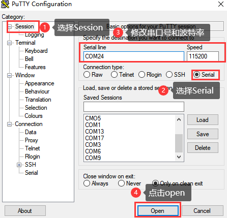
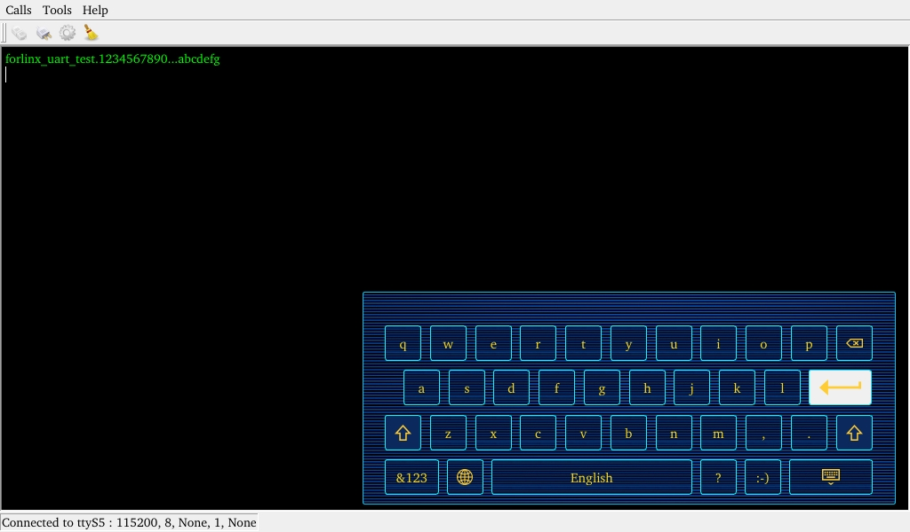
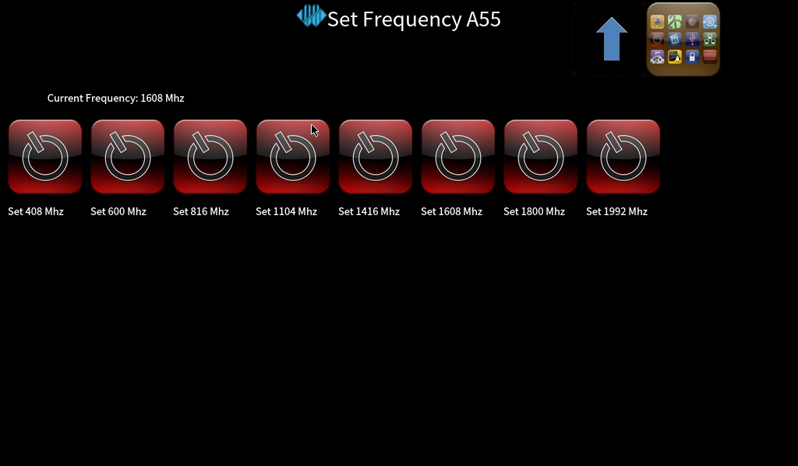
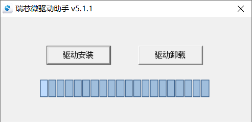
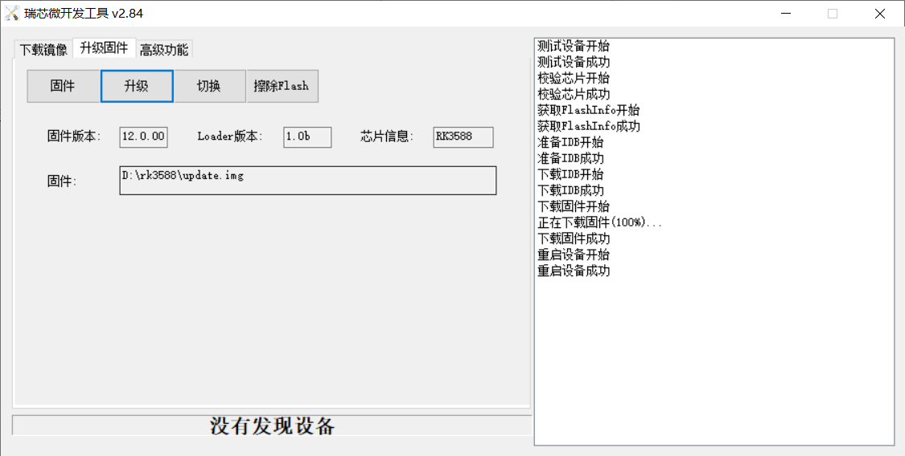

Linux5.10.209_User’s Manual_V1.0
Document classification: □ Top secret □ Secret □ Internal information ■ Open
Copyright
The copyright of this manual belongs to Baoding Folinx Embedded Technology Co., Ltd. Without the written permission of our company, no organizations or individuals have the right to copy, distribute, or reproduce any part of this manual in any form, and violators will be held legally responsible.
Forlinx adheres to copyrights of all graphics and texts used in all publications in original or license-free forms.
The drivers and utilities used for the components are subject to the copyrights of the respective manufacturers. The license conditions of the respective manufacturer are to be adhered to. Related license expenses for the operating system and applications should be calculated/declared separately by the related party or its representatives.
Overview
This manual is designed to help users quickly familiarize themselves with the product, and understand the interface functions and testing methods. It primarily covers the testing of interface functions on the development board, the methods for flashing images, and troubleshooting procedures for common issues encountered in use. In the process of testing, some commands are annotated to facilitate the user’s understanding, mainly for practical use. Please refer to “OK3588-C Linux_User’s Compilation Manual” provided by Forlinx for kernel compilation, related application compilation methods and development environment construction.
There are total six parts:
Chapter 1. provides an overview of the product, briefly introducing the interface resources of the development board, the relevant driver paths in the kernel source code, supported flashing and booting methods, as well as explanations of key sections in the documentation;
Chapter 2. is the fast boot/startup of the product, which can adopt two ways of serial port login and network login;
Chapter 3. provides function test of product desktop and QT interface;
Chapter 4. is the command line operation of the product for functional testing;
Chapter 5. is the multimedia test of the product, including the playback test of the camera and the video hardware codec test;
Chapter 6. is the image update of the product, which mainly describes the method of updating the image to the storage device. Users can choose the corresponding flashing mode according to the actual situation.
A description of some of the symbols and formats in the manual:
Format |
Meaning |
|---|---|
Note |
Note or information that requires special attention, be sure to read carefully |
üìö |
Relevant notes on the test chapters |
Ô∏èüõ§Ô∏è Ô∏è |
Indicates the related path. |
Blue font on gray background |
Refers to commands entered at the command line(Manual input required). |
Black font |
Serial port output message after entering a command |
Bold black |
Key information in the serial port output message |
// |
Interpretation of input instructions or output information |
Username@Hostname |
forlinx @ ubuntu: Development environment ubuntu account information. The user can use this information to determine the environment, in which the function operates. |
After packaging the file system, you can use the “ls” command to view the generated files.
forlinx@ubuntu:~/3588$ ls //List the files in this directory
OK3588-linux-source OK3588-linux-source.tar.bz2
forlinx@ubuntu: the username is forlinx and the hostname is ubuntu, indicating that the operation is performed in the development environment ubuntu;
//: Explanation of the instruction, no input required;
ls：Blue font, indicating the relevant commands that need to be manually entered;
OK3588-linux-source：Black font is the output information after entering the command; bold font is the key information; here is the packaged file system.
Application Scope
This manual is mainly applicable to the Linux5.10.209 operating system on the Forlinx OK3588-C platform. Other platforms can also refer to it, but there will be differences between different platforms. Please make modifications according to the actual conditions.
Revision History
Date |
Manual Version |
SoM Version |
Carrier Board Version |
Revision History |
|---|---|---|---|---|
25/11/2024 |
V1.0 |
V1.1 |
V1.3 and Above |
OK3588-C Linux5.10.209 Software Manual Initial Version |
1. OK3588 Development Board Description
1.1 OK3588 Development Board Description
RK3588 is a low-power, high-performance processor based on ARM64 architecture, which includes 4-core Cortex-A55 and 4-core Cortex-A76 as well as independent NEON processor and neural network processor NPU, and it can be applied to computers, cell phones, personal mobile Internet, and digital multimedia devices.
The connection of OK3588 SoM and the carrier board is board-to-board, and the main interfaces are as follows:

Front

Back
Note: The software manual no longer includes hardware parameter details. Prior to software development, please read the “OK3588-C_Hardware User’s Manual” located at “Hardware Information\User Manual” path. This manual clarifies product naming conventions and specific hardware configuration. It aids in understanding and utilizing the product effectively.
1.2 CPU/GPU/NPU Frequency Description
RK3588J industrial grade SoM frequencies are described below:
Note: For the industrial-grade RK3588J SoM, to better test the SOC’s maximum performance, starting from version R4, it’s set to work in overclocking mode by default in user documentation. (Without performance requirements, it’s better change to normal mode.)
Refer to “Rockchip RK3588J Datasheet V1.1-03/08/2023.pdf ”
Table 3-2 Recommended operating conditions
Maximum CPU A76 frequency, normal mode ① |
1.6GHz |
|---|---|
Maximum CPU A76 frequency, overclocking mode ② |
2.0GHz |
Maximum CPU A55 frequency, normal mode ① |
1.3GHz |
Maximum CPU A55 frequency, overclocking mode ② |
1.7GHz |
Maximum GPU frequency, normal mode ① |
700MHz |
Maximum GPU frequency, overclocking mode ② |
850MHz |
Maximum NPU frequency, normal mode ① |
800MHz |
Maximum NPU frequency, overclocking mode ② |
950MHz |
Normal mode indicates that the chip is operating at a safe voltage and frequency. For industrial environments, it is highly recommended to keep it in normal mode to reasonably ensure longevity;
Overclocking mode will bring higher frequency, and the corresponding voltage will also increase. When running in overclocking mode for a long time, the life of the chip may be shortened, especially in high temperature conditions.
To switch to “normal mode”, you need to add the following to the reference in the kernel device tree #include “rk3588j.dtsi”,
path: OK3588_Linux_fs/kernel/arch/arm64/boot/dts/rockchip/OK3588-C-common.dtsi

RK3588 commercial grade SoM frequencies are described below:
Refer to “Rockchip RK3588 Datasheet V1.7-17/11/2023.pdf ”
Table 3-2 Recommended operating conditions
Maximum CPU A76 frequency |
2.2-2.4 GHz |
|---|---|
Maximum CPU A55 frequency |
1.8GHz |
Maximum GPU frequency |
1GHz |
Maximum NPU frequency |
1GHz |
1.3 Introduction to Linux 5.10.209 System Software Resources
Device |
Location of driver source code in the kernel |
Device Name |
|---|---|---|
LCD Backlight Driver |
drivers/video/backlight/pwm_bl.c |
/sys/class/backlight |
USB Port |
drivers/usb/storage/ |
|
USB Mouse |
drivers/hid/usbhid/ |
/dev/input/mice |
Ethernet |
drivers/net/ethernet/stmicro/stmmac |
|
SD/micro TF card driver |
drivers/mmc/host/dw_mmc-rockchip.c |
/dev/mmcblk1pX |
EMMC Driver |
drivers/mmc/host/dw_mmc-rockchip.c |
/dev/mmcblk0pX |
OV13855 |
drivers/media/i2c/ov13855.c |
/dev/videoX |
LCD Controller |
drivers/gpu/drm/rockchip/rockchip_drm_vop.c |
|
MIPI CSI |
drivers/phy/rockchip/phy-rockchip-mipi-rx.c |
|
MIPI DSI |
drivers/phy/rockchip/phy-rockchip-inno-mipi-dphy.c |
|
LCD Touch Driver |
drivers/input/touchscreen/goodix.c drivers/input/touchscreen/edt-ft5x06.c |
/dev/input/eventX |
RTC Real Time Clock Driver |
drivers/rtc/rtc-rx8010.c drivers/rtc/rtc-pcf8563.c |
/dev/rtc0 |
serial port |
drivers/tty/serial/8250/8250_dw.c |
/dev/ttySX |
Key Driver |
drivers/input/keyboard/adc-keys.c |
/dev/input/eventX |
LED |
drivers/leds/leds-gpio.c |
|
I2S |
sound/soc/rockchip/rockchip_i2s.c |
|
Audio Driver |
sound/soc/codecs/nau8822.c |
/dev/snd/ |
PMIC |
drivers/mfd/rk806.c drivers/regulator/rk860x-regulator.c |
|
PCIE |
drivers/pci/controller/pcie-rockchip.c |
|
Watchdog |
drivers/watchdog/dw_wdt.c |
|
SPI |
drivers/spi/spi-rockchip.c |
|
PWM |
drivers/video/backlight/pwm_bl.c |
1.4 eMMC Memory Partition Table
The following table shows the eMMC memory partition information for the Linux operating system (calculated with a block size of 512bit):
Partition Index |
Name |
Offset / block |
Size/block |
content |
|---|---|---|---|---|
N/A |
security |
0x00000000 |
0x00004000 |
MiniLoaderAll.bin |
1 |
uboot |
0x00004000 |
0x00004000 |
uboot.img |
2 |
misc |
0x00006000 |
0x00002000 |
misc.img |
3 |
boot |
0x00008000 |
0x00020000 |
boot.img |
4 |
recovery |
0x00028000 |
0x00050000 |
recovery.img |
5 |
oem |
0x01c78000 |
0x00040000 |
oem.img |
6 |
rootfs |
0x00078000 |
0x01c00000 |
rootfs.img |
7 |
userdata |
0x01cb8000 |
userdata.img |
2. Fast Startup
2.1 Preparation Before Startup
The OK3588 development board has two system login methods, serial and network login. Hardware preparation before system startup:
12V3A DC Power Cable
Debugging serial cable (Serial Login)
The debug serial port on the development board is a Type-C USB jack, so users can use a USB to Type-C cable to connect the development board to a PC and then check the board’s status.
Network cable (for network login)
Screen: Connect the screen according to the development board interface (optional if display is not needed).
2.2 Debugging Serial Driver Installation
OK3588-C platform uses a Type-C interface for the debug serial port, with an on-board USB-to-UART chip, making debugging tools unnecessary and offering a simple, convenient setup.
To install the driver, please use the driver package CP210x _ VCP _ Windows _ XP _ Vista. Zip provided in the \ Linux \ Tools \ directory of the user profile.
Run CP210xVCPInstaller_x64.exe directly after unzipping is complete, to ensure the latest driver is installed, please click driver uninstall first, then driver install.
2.3 Serial Login
2.3.1 Serial Port Connection Settings
Description:
Serial port settings: baud rate 115200, data bit 8, stop bit 1, no parity bit, no flow control
**Serial terminal login: **
User name: forlinx
Password: forlinx
Software requirements: PC Windows system needs to install the super terminal software. Because the terminal software has many types, users can choose their familiar one.
In the following, we take the putty terminal software as an example to introduce the serial port login method:
Step 1: Connect the serial port number of the computer—check the serial port number from the device manager (Based on the port actually recognized by the computer).

Step 2: Open and set up putty, then set the line according to the COM port of the computer used, baud rate 115200.

Step 3: After the setting, input the COM port used by the computer in Saved Sessions. The following figure takes COM24 as an example, save the settings, open the serial port again later, and click on the saved port number.

Step 4: Turn on the power switch of the development board, then there will be a print message output from the serial port (no need to login).
libpng warning: iCCP: known incorrect sRGB profile
root@ok3588-buildroot:/#
2.3.2 Serial Login Common Problems
If the computer port has no serial port, it can be connected to the development board through the USB to serial port cable. If the USB to serial port cable is used, the corresponding driver needs to be installed.
It is better to use a good quality cable to avoid error codes.
2.4 Network Login Methods
2.4.1 Network Connection Test
Description:
The factory default configuration of the card is static IP; the IP address is 192.168.0.232. Please refer to “Ethernet Configuration” chapter for the static IP changing method;
The computer and board should be on the same network segment for testing.
Before logging into the network, ensure that the direct network connection between the computer and the development board is functioning properly. You can test the connection status via pin command.
The specific method of operation is as follows:
1. Connect the development board’s eth0 interface to the computer using an Ethernet cable. Power on the board and boot the kernel. Confirm the blue heartbeat LED is blinking. Check the network card connection, ensuring its LED flashes rapidly. Once confirmed, proceed with testing the network connection;
2. Close the computer firewall (General computer operations, not described here in detail), then open the computer’s run command;
3. Use cmd to open the administrator interface , and the ping command to test the network connection status of the computer and the development board.
A data return indicates a normal network connection.
2.4.2 SSH Server
Description:
The factory default configuration of the card is static IP; the IP address is 192.168.0.232. Please refer to “Ethernet Configuration” chapter for the static IP changing method;
Users: forlinx, Password:forlinx;
If using root login, we need to change the password before using ssh login and scp for file transfer.
1. Use ssh to log in the development board
Click “Open”, the following dialog box will appear, click “Yes” to enter the login screen.

Login as：forlinx
root@192.168.0.232's password: //Follow the prompts to enter the account "forlinx" and the password "forlinx"
root@ok3588-buildroot:~#
2.4.3 SFTP
Path: OK3588-C (Linux) user profile\tool\FileZilla*
The OK3588 development board supports SFTP service and it is automatically enabled at startup, so it can be used as an SFTP server after setting the IP address. The following describes how to utilize the FTP tool for file transfer.
Install the FileZilla tool on Windows and follow the steps shown in the image below to configure it. Use “forlinx” as both the username and password.
Open the filezilla tool, click on File and select Site Manager.
After successful login, you can upload and download.
2.5 Screen Switching
OK3588 supports various screen interfaces such as MIPI DSI, HDMI, eDP, DP, RGB, etc., and can simultaneously perform mirroring and independent display for up to four screens. Currently there are three screen switching methods: uboot menu dynamic control; kernel device tree designation; DisplayHwConfig application control.
OK3588 contains 4 display controllers, i.e. 4 VP. Supports up to 4 screens simultaneously. The maximum resolution of VP0 is 7680x4320; the maximum resolution of VP1 is 4096x4320; the maximum resolution of VP2 is 4096x4320; the maximum resolution of VP3 is 2048x1080.
2.5.2 Kernel Device Tree Specification
This method does not need to connect the serial port terminal, and the system image defaults to the expected configuration selection, which is suitable for mass production. However, you need to manually modify the device tree and regenerate the system image once again.
Note: This method has higher priority than the uboot screen selection, and the uboot selection will not take effect after the device tree is modified.
The device tree path: kernel/arch/arm64/boot/dts/rockchip/OK3588-C-common.dtsi
In the kernel source code, open the device dtsi file and find the following node:
The node has a default disabled state and needs to be changed to an okay enabled node. Change according to screen requirements.
Parameter Description:
Parameter |
Meaning |
|---|---|
status |
Describe the node state: disabled is for off, okay is for on |
HDMI0 |
Specify the VP assigned to HDMI0 |
HDMI1 |
Specify the VP assigned to HDMI1 |
EDP0 |
Specifies the VP assigned to EDP0 |
EDP1 |
Specify the VP assigned to EDP1 |
DP0 |
Specify the VP assigned to DP0 |
DP1 |
Specify the VP assigned to DP1 |
MIPI0 |
Specify the VP assigned to MIPI0 |
MIPI1 |
Specify the VP assigned to MIPI1 |
RGB |
Specify the VP assigned to RGB |
primary_display |
Specify the main screen display |
primary_display_resolution |
Specify the resolution to be used for the main screen with HDMI |
disp_type |
Note: Please specify the same and different displays, the default is the same display. |
The user changes the setup parameters as needed, and after saving, the image needs to be recompiled to generate the image.
An annotated description of the node:
1. HDMI0 and EDP0 share the same port, and only one of them can be used at a time;
2. HDMI1 and EDP1 share the same port, and only one of them can be used at a time;
3. There are only four VPs internally, so a maximum of four interfaces can be activated;
4. HDMI, EDP, and DP can only be displayed on VP0, VP1, or VP2;
5. DSI0 and DSI1 can only be displayed on VP2 or VP3;
6. RGB can only be displayed on VP3.
So the optional parameters for HDMI0/1, EDP0/1, DP0/1 are: “VP0”, “VP”, “VP2”, “OFF”;
DP0/1 optional parameters are: “VP2”, “VP3”;
RGB optional parameter is: “VP3”.
The primary_display parameter depends on the actual display interface assigned to get the VP.
The optional parameters for disp_type are: “sync” and “async”.
Note: When modifying the device tree, you need to follow the annotation rules to avoid using conflicts. The driver does not detect whether the forlinx-control configuration conforms to the rules. An error in the setting will cause abnormal display.
For the display interface set to “OFF”, blocking, deleting, or retaining is possible. It’s not necessary to set all four VP.
Examples:
Assign VP0 to HDMI0, VP1 to HDMI1, VP2 unused, and VP3 for RGB use. Set the main screen to HDMI0.
After saving, recompile to generate the image.
2.6 System Shutdown
In general, the power can be turned off directly. If there is data storage, function use, or other operations, avoid turning off the power arbitrarily during operation to prevent irreversible damage to the file. In such cases, only re-flashing the firmware can resolve the issue. To ensure that data is not completely written, enter the sync command to complete data synchronization before turning off the power.
Note: For products designed based on the SoM, if there are scenarios where accidental power loss causes the system to shut down unexpectedly, measures such as adding power-loss protection can be incorporated into the design.
3. Desktop Function Test
OK3588 platform has excellent support for Qt, especially for multimedia-related classes, such as video decoding and playback, camera, video recording, etc. can all be combined with hardware codecs and OpenGL to achieve the best results.
3.1 Introduction to Interface Function
The desktop is displayed as follows after the board booting:
3.2 Hardware Decoding
Click the desktop icon to open the video player.
Application Icons

Note: The test video file is located in the directory: /userdata/me*.mp4. Please test 8K video playback with only one display turned on.
3.3 OpenGL Test
OK3588 supports OpenGL ES3.2; click the desktop icon for OpenGL test.
Application Icons
3.4 Music Play Test
“music player” is a simple audio test application that can be used to test the function of the sound card or as a simple audio player.
Application Icons
Application Interfaces
Click the button in the lower left corner and select test audio /userdata/media/test.mp3
Note: The default sound card output is nau8822. If using HDMI output, please use the command on the serial port:
root@ok3588:/# gst-play-1.0 /userdata/media/test.mp3 --audiosink="alsasink device= plughw:3,0"
3.5 4G/4G Test
This test requires an Internet-capable SIM card, a description of which can be found in the Command Line Functional Tests 5G section of this manual.
The “4G/5G” test program is used to test the OK3588 external 5G module (RM500U). Before testing, please power off the development board, access the 5G module, insert the SIM card, start the development board, and open the test application.
Meanwhile, the test supports the 4G module (EM05-CE), inserts the 4G module and SIM card in the case of power failure, and opens the test application after powering up the system to start.
Application Icons
Application Interfaces
Click the connect button, the program will automatically enter the dialing process and get the IP settings, DNS, etc. Wait patiently for a few seconds, and then click the ping button to test.
3.6 WIFI Test
“WIFI” is a tool to configure wifi. The OK3588 platform has the AW-XM458 module on board by default. The wifi module exists in the system as a mlan node, and this test corresponds to mlan0 (other corresponding nodes are used for multiple devices):
Application Icons
Application Interfaces
Select mlan0, enter the router name(the one connected to wifi) in the SSID column, enter the router password in the PAWD column, click CONNECT to the router via wifi, enter a valid ip in the IP column, and then click ping to see if the currently used wifi network is smooth.
The following is an example test of the AW-XM458 module.
Open the Wifi test app, enter the correct network name and password, click CONNECT, wait 5 seconds, and click STATUS to view the connection ledge.
After the connection is successful, click ping to test the network.
3.7 Network Configuration Test
When the OK3588 starts up, the default setting of the NIC is dhcp. The two modes of dhcp and static can be selected through the “Network” configuration application, and the static mode can be configured with ip address, subnet mask, gateway, and DNS.
Application Icons
The DHCP mode interface is as follows:
Check DHCP, select the NIC device needing to be configured, and click Apply and Restart Network at the bottom of the interface to restart the network and get the ip automatically.
The static mode interface is as follows:
Select the NIC device to be configured in the interface, and enter the ip to be set in the ip field, enter the subnet mask in the netmask field, the gateway in the geteway field, and DNS in the dns field.
Note: Information such as ip set in STATIC mode is saved to the relevant configuration file of the system so each reboot will use the network information set this time; network information configured in DHCP mode, on the other hand, does not need to care about this; ip addresses are dynamically assigned every reboot.
3.8 Ping Test
“Ping” is an interface application of the common network testing command ping.
Application Icons
Application Interfaces
Write the target ip needing ping in the hostname field; after clicking the ping button, the RESULT column will indicate the result, click stop to end the ping test and clear to clean the information in the result.
3.9 Browser Test
“DemoBrowser” is a simple and practical web browser. When using it, please make sure that the network is smooth, and make sure that the dns is available before accessing the external network; when the browser starts, it will visit the official website of Forlinx Embedded by default, and the interface is as follows:
Note: If the development board time is abnormal, it will cause certificate problems. Do not shut down the power immediately after using the browser or the sync command at the command line. Otherwise, it may cause the browser to exit abnormally and not work properly, and can only be solved by re-burning.
Exit this browser via the upper navigation bar File->Quit.
3.10 Watchdog Test
“WatchDog” is an application used to test the watchdog status.
Application Icons
Application Interfaces
Check feed dog and click the open watchdog key, then the watchdog will be activated, the program will carry out the feeding operation, and the system will not reboot under normal circumstances; when unchecking feed dog and clicking open watchdog key, the watchdog function will be activated, the program will not carry out the feeding operation, and the system enters into a reboot after the watchdog is activated for about 10s, which indicates that the watchdog function is normal.
3.11 Key Test
The “Keypad” is used to test whether the platform’s own keys are available:
Application Icons
Application Interfaces
By default, OK3588 platform configures the four physical buttons V+, V-, Home, and ESC as the Volume + and Volume - keys, Home, and Return keys, respectively. The corresponding key in the test application will turn blue when pressing the key, indicating that the key is in normal status.
“Exit” the current routine and returns to the system desktop.
3.12 RTC Test
The “RTC” application allows you to view and set the current system time:
Application Icons
Application Interfaces
After SET, you can set the time and click Save to finish the setting.
With the RTC backup battery installed, power down and restart the development board to confirm that the RTC clock is set successfully.
3.13 Same & Different Display
Note: The default setting is simultaneous display; for extended display configuration, the disp_type property in the UBOOT menu needs to be changed to async. In the case of a heterodyne display, if the configuration is a multi-screen display without connecting a monitor, the QT display will show on the neighboring screens, which needs to check if the screens are connected in QT.
Click on the desktop icon QtMultScreen to test Multi Screen.
Open multiple screens according to the UBOOT menu configuration section to configure HDMI as the main screen.
After clicking the “show” button, a window will pop up on the other screen, and the QT window can be moved on the other screen with the mouse.
3.14 UART Test
Click on the desktop icon to use it to test the OK3588 on-board UART interface.
Application Icons
UART2, UART4, UART6, UART9, a total of four serial ports led out from the OK3588 carrier board; UART2 for debugging serial port, UART6 for Bluetooth serial port, and UART9 for 485 serial port. The default device names of UART4 and UART9 in the development board are ttyS4 and ttyS9 respectively.
UART |
Device Nodes |
Description |
|---|---|---|
UART2 |
/dev/ttyS2 |
Debugging serial port cannot be used directly for this test. |
UART4 |
/dev/ttyS4 |
TTL level, pinned-put from P11, can be used for test. |
UART6 |
/dev/ttyS6 |
It is used for Bluetooth and is not separately led out, so it cannot be used directly for this test. |
UART9 |
/dev/ttyS9 |
RS485 |
Use the command fltest_qt_terminal to open the uart’s qt test program (refer to Setup at the beginning of this section for qt test method). This test uses UART4 (ttyS4) to perform serial port test by sending and receiving data between the development board’s UART and the computer’s serial port tool software.

1. First, connect the development board and computer with the TTL to the USB module, then power up the development board and check in the computer’s device manager recognized as COM4 (users set the parameters with their actual recognized COM port);

2. Open the computer serial port tool, set the serial port parameters: Baud rate 115200, 8 data bits, 1 stop bit, no parity, no flow control, and open the serial port;
3. Click the UART test icon to enter the following interface to set the serial port parameters:

Click the setup button in the upper left corner to set the serial port parameters to be consistent with the parameters of the serial port tool on the computer side, as shown below:
to set the serial port parameters to be consistent with the parameters of the serial port tool on the computer side, as shown below:
Relevant Parameter |
Meaning |
|---|---|
Select Serial Port |
Setting the serial port (select UART5, i.e. ttyS5) |
BaudRate |
Set baud rate (115200) |
Data bits |
Set data bits (8 bits) |
Parity |
Set parity bit (no parity) |
Stop bits |
Set stop bit (1 bit) |
Flow control |
Set flow control (no flow control) |

After setting the serial port parameters, click the connection button in the upper left corner. At this time, the test program can carry out the data receiving and sending test.
4. The serial port tool of the computer sends: “forlinx_uart_test.1234567890…”, the test interface will receive the data:

Click on the test interface will pop up the soft keyboard, enter “abcdefg”, press enter on the soft keyboard to send data to the serial port tool on the computer:

The data received by the serial port tool on the computer side:
3.15 Database Test
After clicking the desktop icon, the Sqlite test database will be ready.
Application Icons
3.16 Backlight Test
“BackLight” is the lcd backlight adjustment application:
Application Icons
Drag the slider in the interface to set the Lcd backlight brightness, level 0 is no backlight, level 255 is the highest level.
3.18 Web Services
The OK3588 development board comes with the lighttpd web server pre-installed, and the lighttpd service has been automatically started at system startup. Enter the IP address of the board into the PC browser to view the web pages in the board’s webserver, as shown in the following figure:
Note: To use this function properly, the network IP of the development board needs to be the same network segment as the network IP of the PC, or the PC is under the subnet of the network where the development board is located.
3.19 Abnormal Touch
Configure OK3588 to different display mode, connect two MIPI display screens, and touch each MIPI screen respectively without affecting each other.
3.20 Tftp Upgrading system
Note: The current version upgrade rootfs.img file cannot be larger than 1.6G. Use tftp udp to transfer on port 69. Install the tftpd server tool Tftpd64.4.64.exe
Path: OK3588-C-Linux User Profile/Tools/Tftpd64.4.64.exe
Install Tftpd64.4.64.exe
Open Tftpd64.4.64.exe and run the test
CurrentDirectory: Select the OK3588-C partition firmware storage path.
Server interfaces: Select the local IP address.
Note: Please close the window firewall and verify the tftp download file test by yourself.
Open the desktop Tftp Update icon
Please fill in the form according to the actual situation. Select the firmware to update.
Click Tftp: Off to become Tftp: On; reboot the board.
The serial port printing information is as follows:
3.21 CPU Frequency Configuration Test
Note: The current interface only configures A55 core, not A76 core FM. For A76 core FM, please refer to the FM test chapter.
Click the desktop icon to enter the next menu:
->
Application Icons
The maximum CPU clock frequency of OK3588 is 1.8 GHz. By default, the CPU will dynamically adjust the clock frequency according to the load. You can also set a fixed CPU clock frequency.
Click the Power icon on the desktop to enter the CPU clock frequency setting page.

Set Userspace Governor: Set the clock frequency in user mode.
Set Frequency A55: Set the main frequency.
Taking setting the clock frequency as an example, if you need to set a fixed frequency, first click “Set Userspace Governor”, then click “run”. After that, return to the above operation interface and click “Set Frequency A55” to make the setting.

Select the corresponding frequency for setting according to your needs.
4. Command Line Function Test
OK3588 platform has various built-in command line tools available to users.
4.1 System Information Query
To view kernel and cpu information, enter the following command
root@ok3588-buildroot:~# uname -a
Linux ok3588-buildroot 5.10.209 #1 SMP Sun Aug 18 19:07:38 CST 2024 aarch64 GNU/Linux
View operating system information:
root@ok3588-buildroot:~# cat /etc/issue
Welcome to Forlinx OK3588 Board
View environment variable information:
root@ok3588-buildroot:/# env
SHELL=/bin/sh
GST_V4L2_PREFERRED_FOURCC=NV12:YU12:NV16:YUY2
GST_VIDEO_CONVERT_PREFERRED_FORMAT=NV12:NV16:I420:YUY2
CHROMIUM_FLAGS=--enable-wayland-ime
GST_V4L2_USE_LIBV4L2=1
GST_INSPECT_NO_COLORS=1
PULSE_HOME=/userdata/.pulse
EDITOR=/bin/vi
GST_DEBUG_NO_COLOR=1
PWD=/
HOME=/
LANG=en_US.UTF-8
WESTON_DRM_PRIMARY=DSI-1
ADB_TCP_PORT=5555
LS_COLORS=rs=0:di=01;34:ln=01;36:mh=00:pi=40;33:so=01;35:do=01;35:bd=40;33;01:cd=40;33;01:or=40;31;01:mi=00:su=37;41:sg=30;43:ca=30;41:tw=30;42:ow=34;42:st=37;44:ex=01;32:*.tar=01;31:*.tgz=01;31:*.arc=01;31:*.arj=01;31:*.taz=01;31:*.lha=01;31:*.lz4=01;31:*.lzh=01;31:*.lzma=01;31:*.tlz=01;31:*.txz=01;31:*.tzo=01;31:*.t7z=01;31:*.zip=01;31:*.z=01;31:*.Z=01;31:*.dz=01;31:*.gz=01;31:*.lrz=01;31:*.lz=01;31:*.lzo=01;31:*.xz=01;31:*.zst=01;31:*.tzst=01;31:*.bz2=01;31:*.bz=01;31:*.tbz=01;31:*.tbz2=01;31:*.tz=01;31:*.deb=01;31:*.rpm=01;31:*.jar=01;31:*.war=01;31:*.ear=01;31:*.sar=01;31:*.rar=01;31:*.alz=01;31:*.ace=01;31:*.zoo=01;31:*.cpio=01;31:*.7z=01;31:*.rz=01;31:*.cab=01;31:*.wim=01;31:*.swm=01;31:*.dwm=01;31:*.esd=01;31:*.jpg=01;35:*.jpeg=01;35:*.mjpg=01;35:*.mjpeg=01;35:*.gif=01;35:*.bmp=01;35:*.pbm=01;35:*.pgm=01;35:*.ppm=01;35:*.tga=01;35:*.xbm=01;35:*.xpm=01;35:*.tif=01;35:*.tiff=01;35:*.png=01;35:*.svg=01;35:*.svgz=01;35:*.mng=01;35:*.pcx=01;35:*.mov=01;35:*.mpg=01;35:*.mpeg=01;35:*.m2v=01;35:*.mkv=01;35:*.webm=01;35:*.ogm=01;35:*.mp4=01;35:*.m4v=01;35:*.mp4v=01;35:*.vob=01;35:*.qt=01;35:*.nuv=01;35:*.wmv=01;35:*.asf=01;35:*.rm=01;35:*.rmvb=01;35:*.flc=01;35:*.avi=01;35:*.fli=01;35:*.flv=01;35:*.gl=01;35:*.dl=01;35:*.xcf=01;35:*.xwd=01;35:*.yuv=01;35:*.cgm=01;35:*.emf=01;35:*.ogv=01;35:*.ogx=01;35:*.aac=00;36:*.au=00;36:*.flac=00;36:*.m4a=00;36:*.mid=00;36:*.midi=00;36:*.mka=00;36:*.mp3=00;36:*.mpc=00;36:*.ogg=00;36:*.ra=00;36:*.wav=00;36:*.oga=00;36:*.opus=00;36:*.spx=00;36:*.xspf=00;36:
WAYLANDSINK_FORCE_DMABUF=1
GST_V4L2SRC_DEFAULT_DEVICE=/dev/video-camera0
QT_QPA_PLATFORM=wayland
USB_FW_VERSION=0x0310
TERM=xterm-color
USER=root
AUTOAUDIOSINK_PREFERRED=pulsesink
ADBD_SHELL=/bin/bash
GST_V4L2SRC_RK_DEVICES=_mainpath:_selfpath:_bypass:_scale
WESTON_DRM_MIRROR=1
SHLVL=1
USB_FUNCS=adb
WESTON_DISABLE_ATOMIC=1
USB_MANUFACTURER=Rockchip
USB_PRODUCT=rk3xxx
XDG_RUNTIME_DIR=/var/run
USB_VENDOR_ID=0x2207
PLAYBIN2_PREFERRED_AUDIOSINK=pulsesink
PATH=/usr/bin:/usr/sbin
storagemedia=emmc
GST_V4L2SRC_MAX_RESOLUTION=3840x2160
GST_VIDEO_DECODER_QOS=0
_=/usr/bin/env
4.2 Frequency Test
Note: Quad-core A55 is cpu0, cpu1, cpu2, cpu3; Quad-core A76 is cpu5, cpu6, cpu7, cpu8. This process takes cpu0 as an example: The actual process of cpu1, cpu2, cpu3 will be changed at the same time; cpu4, cpu5, cpu6, cpu7 will not affect each other when operated individually.
All cpufreq governor types supported in the current kernel:
root@ok3588-buildroot:/# cat /sys/devices/system/cpu/cpu0/cpufreq/scaling_available_governors
conservative ondemand userspace powersave performance schedutil
The userspace indicates user mode, in which other users’ programs can adjust the CPU frequency.
View the current CPU supported frequency level.
root@ok3588-buildroot:~# cat /sys/devices/system/cpu/cpu0/cpufreq/scaling_available_frequencies
408000 600000 816000 1008000 1200000 1416000 1608000 1800000
Set to user mode and modify the frequency to 1800000：
root@ok3588-buildroot:/# echo userspace > /sys/devices/system/cpu/cpu0/cpufreq/scaling_governor
root@ok3588-buildroot:/# echo 1800000 > /sys/devices/system/cpu/cpu0/cpufreq/scaling_setspeed
View the modified current frequency:
root@ok3588-buildroot:/# cat /sys/devices/system/cpu/cpu0/cpufreq/cpuinfo_cur_freq
1800000
4.3 Temperature Test
View the temperature value:
root@ok3588-buildroot:~# cat /sys/class/thermal/thermal_zone0/temp
45307
The temperature value is 45.3°C.
4.4 DDR Test
root@ok3588-buildroot:/# fltest_memory_bandwidth.sh
L1 cache bandwidth rd test with # process
0.008192 34377.39
0.008192 33984.75
0.008192 55061.17
0.008192 55036.10
0.008192 31220.66
L2 cache bandwidth rd test
0.131072 43651.06
0.131072 43698.59
0.131072 43608.40
0.131072 43682.74
0.131072 37935.10
Main mem bandwidth rd test
52.43 18157.16
52.43 18066.44
52.43 18711.21
52.43 18293.37
52.43 17823.83
L1 cache bandwidth wr test with # process
0.008192 71583.65
0.008192 50513.15
0.008192 71591.09
0.008192 71590.31
0.008192 71535.33
L2 cache bandwidth wr test
0.131072 43075.72
0.131072 45764.77
0.131072 41351.95
0.131072 46124.97
0.131072 44245.42
Main mem bandwidth wr test
52.43 7342.97
52.43 7310.21
52.43 7357.40
52.43 7352.24
52.43 7330.65
L1 cache bandwidth rdwr test with # process
0.008192 36026.35
0.008192 36037.05
0.008192 36048.68
0.008192 36036.17
0.008192 36024.58
L2 cache bandwidth rdwr test
0.131072 25015.92
0.131072 25010.29
0.131072 25017.20
0.131072 25020.46
0.131072 13448.39
Main mem bandwidth rdwr test
52.43 10359.38
52.43 10580.99
52.43 10595.96
52.43 10304.40
52.43 10792.26
L1 cache bandwidth cp test with # process
0.008192 28217.79
0.008192 36032.60
0.008192 36036.75
0.008192 36038.84
0.008192 36041.82
L2 cache bandwidth cp test
0.131072 22356.68
0.131072 22555.37
0.131072 22625.67
0.131072 22519.82
0.131072 22364.80
Main mem bandwidth cp test
52.43 6197.99
52.43 6141.36
52.43 6114.86
52.43 6138.48
52.43 6102.76
L1 cache bandwidth frd test with # process
0.008192 10891.45
0.008192 10895.39
0.008192 10898.38
0.008192 10893.92
0.008192 10895.88
L2 cache bandwidth frd test
0.131072 10815.70
0.131072 10811.78
0.131072 10819.62
0.131072 10816.62
0.131072 10778.87
Main mem bandwidth frd test
52.43 9245.07
52.43 9048.81
52.43 9310.74
52.43 9365.63
52.43 9180.32
L1 cache bandwidth fwr test with # process
0.008192 15780.22
0.008192 15145.62
0.008192 30524.19
0.008192 30891.70
0.008192 31170.71
L2 cache bandwidth fwr test
0.131072 27427.59
0.131072 22163.22
0.131072 27451.38
0.131072 24936.65
0.131072 27422.61
Main mem bandwidth fwr test
52.43 3328.81
52.43 3343.89
52.43 3326.91
52.43 3335.38
52.43 3321.01
L1 cache bandwidth fcp test with # process
0.008192 9104.37
0.008192 9051.73
0.008192 5531.40
0.008192 9056.83
0.008192 6320.95
L2 cache bandwidth fcp test
0.131072 8971.34
0.131072 4788.34
0.131072 8972.33
0.131072 4779.16
0.131072 6890.70
Main mem bandwidth fcp test
52.43 8565.40
52.43 8787.93
52.43 8732.31
52.43 8564.00
52.43 8559.80
L1 cache bandwidth bzero test with # process
0.008192 70325.47
0.008192 61005.11
0.008192 70226.90
0.008192 70151.61
0.008192 70173.32
L2 cache bandwidth bzero test
0.131072 60200.58
0.131072 59218.33
0.131072 47963.00
0.131072 43743.43
0.131072 54540.03
Main mem bandwidth bzero test
52.43 27843.23
52.43 27449.63
52.43 27216.89
52.43 27569.92
52.43 27608.64
L1 cache bandwidth bcopy test with # process
0.008192 35515.04
0.008192 35475.39
0.008192 35526.89
0.008192 35551.67
0.008192 35482.84
L2 cache bandwidth bcopy test
0.131072 32708.53
0.131072 32761.49
0.131072 16620.35
0.131072 28515.39
0.131072 32714.54
Main mem bandwidth bcopy test
52.43 11990.58
52.43 11997.44
52.43 11856.35
52.43 11929.19
52.43 11706.78
4.5 Watchdog Test
Watchdog is a function often used in embedded systems. The device node of watchdog in OK3588 is /dev/watchdog. This test provides two test procedures, and the user selects one test according to the actual situation.
Start the watchdog, set the reset time to 10s, and kick the dog regularly.
If usingfltest_watchdog, it turns on the watchdog and kick it, so the system does not reboot.
root@ok3588-buildroot:~# fltest_watchdog
Watchdog Ticking Away!
When using ctrl+c to end the test program, kicking the dog is stopped, the watchdog is on, and the system is reset after 10s.
If you do not want to reset, enter the shutdown watchdog command within 10s after finishing the program:
root@ok3588-buildroot:~# fltest_watchdog -d //Turn off the watchdog
Start watchdog, set reset time 10s, do not kick the watchdog.
Execute the command fltest_watchdogrestart, this command will turn on the watchdog but will not kick the watchdog and the system will reboot after 10s.
root@ok3588-buildroot:~# fltest_watchdogrestart
4.6 RTC Function Test
Note: Ensure that button cell batteries are installed on the board and the battery voltage is normal.
RTC test: The main way to set the software and hardware time is by using the date and hwclock utilities. When performing the board power-down and power-up test, the software clock reads whether the RTC clock is synchronized or not.
Time setting
root@ok3588-buildroot:/# date -s "2022-12-12 17:23:00" //Set software time
Mon Dec 12 17:23:00 CST 2022
root@ok3588-buildroot:/# hwclock -wu //Synchronize software time to hardware time
root@ok3588-buildroot:/# hwclock -r //Display hardware time
Mon Dec 12 17:23:06 CST 2022
Then power down and power up the board, enter the system, and read the system time. After that, we can see that the time has synchronized.
root@ok3588-buildroot:~# date
Mon Dec 12 17:23:20 CST 2022
4.7 Key Test
Use the fltest_keytest command line tool to test the keys. fltest_keytest currently supports the test of four keys on the carrier board, VOL+, VOL-, MENU, and ESC, with key codes 115, 114, 139, and 158, respectively.
Execute the following command:
|
|---|
At this point, press the lift button in sequence, and the following can be output on the terminal:
key115 Presse // VOL+press
key115 Released // VOL+release
key114 Presse // VOL-press
key114 Released // VOL-release
key139 Presse // MENU press
key139 Released // MENU release
key158 Presse // ESC press
key158 Released // ESC release
4.8 UART Test
UART2, UART4, UART6, UART9, a total of four serial ports led out from the OK3588 carrier board; UART2 for debugging serial port, UART6 for Bluetooth serial port, and UART9 for 485 serial port. The default device names of UART4 and UART9 in the development board are ttyS4 and ttyS9 respectively.
UART |
Device Nodes |
Description |
|---|---|---|
UART2 |
/dev/ttyS2 |
Debugging serial port cannot be used directly for this test. |
UART4 |
/dev/ttyS4 |
TTL level, pinned-out from P11, can be used for this test. |
UART6 |
/dev/ttyS6 |
It is used for Bluetooth and is not separately led out, so it cannot be used directly for this test. |
UART9 |
/dev/ttyS9 |
RS485 |
UART4 (ttyS4) is used in this test, and the transceiver pins UART4 are short-circuited according to the schematic diagram of the development board, corresponding to PIN 7 and PIN 10 respectively. Serial port testing is performed by sending and receiving data between the development board’s UART and the computer’s serial port tool software.

1. First, connect the development board and computer with the TTL to the USB module, then power up the development board and check in the computer’s device manager recognized as COM4 (users set the parameters with their actual recognized COM port);

2. Open the computer serial port tool, set the serial port parameters: baud rate 115200, 8 data bits, 1 stop bit, no parity, no flow control, and open the serial port;
Enter the following command into the serial port of the development board (the test program has a fixed baud rate of 115200):
root@ok3588-buildroot:~# fltest_uarttest -d /dev/ttyS4
Printing information is as follows:
Welcome to uart test
Send test data:
forlinx_uart_test.1234567890... //Send the data
The test program automatically se”forlinx_uart_test.1234567890…”. The message is received when the serial aide is viewed:
PC serial tool sends “forlinx_uart_test.1234567890…”. At this point, the development board receives the message and the related printout is as follows:
Welcome to uart test
Send test data:
forlinx_uart_test.1234567890...
Read Test Data finished,Read:
forlinx_uart_test.1234567890... //Receive the data
4.9 ADC Test
OK3588-C development board provides an internal 8-channel ADC. An adjustable resistor connects to the saradc2, saradc4, saradc5, saradc6, and saradc7 channels, and saradc2 is selected for testing. The ADC pin hardware diagram is shown below, and the voltage is inputted at pin 1 of P12. The current chip uses a 1.8V reference voltage corresponding to a 12-bit ADC maximum of 4096.
Test adjustable resistance value
root@ok3588-buildroot:~# cd /sys/bus/iio/devices/iio:device0
root@ok3588:/sys/bus/iio/devices/iio:device0# cat in_voltage2_raw
3516
4.10 TF Card Test
Description:
The SD card mount directory is /run/media/ and supports hot-swapping.
1. Insert the TF card into the TF card slot on the carrier board before powe-up . Then power up and start, run the command dmesg, and the terminal will have the following printed information:
2. Check the mount directory:
root@ok3588-buildroot:~# mount | grep "mmcblk1p1"
/dev/mmcblk1p1 on /run/media/mmcblk1p1 type vfat (rw,relatime,fmask=0022,dmask=0022,codepage=936,iocharset=utf8,shortname=mixed,errors=remount-ro)
3. Write test:
root@ok3588-buildroot:/# dd if=/dev/zero of=/run/media/mmcblk1p1/test bs=1M count=500 conv=fsync
500+0 records in
500+0 records out
524288000 bytes (524 MB, 500 MiB) copied, 13.5747 s, 38.6 MB/s
4. Read the test:
Note: To ensure the accuracy of the data, please restart the development board to test the reading speed.
root@ok3588-buildroot:/# dd if=/run/media/mmcblk1p1/test of=/dev/null bs=1M
500+0 records in
500+0 records out
524288000 bytes (524 MB, 500 MiB) copied, 9.60899 s, 54.6 MB/s
5. After using the TF card, uninstall it with umount before ejecting it.
root@ok3588-buildroot:/# umount /run/media/mmcblk1p1
Note: Plug and unplug the TF card after exiting the TF card mounting path.
4.11 eMMC Test
OK3588 platform eMMC runs in HS200 mode 200MHz clock by default. The following is a simple eMMC read/write speed test: taking the read/write ext4 file system as an example.
Write test:
root@ok3588-buildroot:/# dd if=/dev/zero of=/test bs=1M count=500 conv=fsync
500+0 records in
500+0 records out
524288000 bytes (524 MB, 500 MiB) copied, 3.29881 s, 159 MB/s
Read test：
Note: To ensure the accuracy of the data, please restart the development board to test the reading speed.
root@ok3588-buildroot:/# dd if=/test of=/dev/null bs=1M
500+0 records in
500+0 records out
524288000 bytes (524 MB, 500 MiB) copied, 2.57102 s, 204 MB/s
4.12 USB Mouse Test
Connect the USB mouse to the USB interface of the OK3588 platform and use the dmesg command, the serial terminal prints the following information:
At this time, the arrow cursor appears on the screen, the mouse can work normally.
4.13 USB2.0
OK3588 supports 1 x USB 2.0 interface. Users can connect a USB mouse, USB keyboard, USB flash drive ,and other devices on any of the on-board USB HOST ports, and it supports hot-swapping of the above devices. Demonstration with a mounting USB flash drive, the current USB flash drive test supports up to 32G, but no test for 32G or above.
The terminal prints information about the USB flash drive, and since many types of USB flash drives exist, the information displayed may vary:
After the development board booting, connect the USB interface disk to the USB host interface of the development board. The default log print information is low, so there will be no print information. Use the dmesg command to view and get information about the USB flash drive.
View the mount directory:
root@ok3588-buildroot:/# mount | grep "sda1"
/dev/sda1 on /run/media/sda1 type vfat (rw,relatime,fmask=0022,dmask=0022,codepage=936,iocharset=utf8,shortname=mixed,errors=remount-ro)
You can see the USB mount directory: /run/media/sda1
2. View the contents of the U disk (sda1 is based on the actual USB flash drive partition name).
root@ok3588-buildroot:/# ls -l /run/media/sda1/
total 8
drwxrwx--- 2 root disk 8192 Sep 23 2021 'System Volume Information'
-rwxrwx--- 1 root disk 0 Apr 25 09:25 test
3. Write test: Write speeds are limited by the specific storage device:
root@ok3588-buildroot:/# dd if=/dev/zero of=/run/media/sda1/test bs=1M count=500 conv=fsync
500+0 records in
500+0 records out
524288000 bytes (524 MB, 500 MiB) copied, 74.533 s, 7.0 MB/s
4. Read test:
Note: To ensure the accuracy of the data, please restart the development board to test the reading speed.
root@ok3588-buildroot:/# dd if=/run/media/sda1/test of=/dev/null bs=1M iflag=direct
500+0 records in
500+0 records out
524288000 bytes (524 MB, 500 MiB) copied, 25.2193 s, 20.8 MB/s
6. After using a USB flash drive, before removing the USB flash drive, you need to use the “umount” command to unmount it.
root@ok3588-buildroot:/# umount /run/media/sda1
Note: Exit the USB flash drive mount path before plugging and unplugging the USB flash drive.
4.14 TYPE-C Test
OK3588-C includes 2 x TYPE-C. The HOST/DEVICE mode of TYPE-C0 is automatically detected, while TYPE-C1 only supports HOST mode. Device mode can flash, transfer ADB file, debug, and Host mode can plug in a normal USB device.
Device Mode:

Host Mode:
View the insertion information via demsg.
4.15 Ethernet Configuration
OK3588-C has two Gigabit NIC on board, which are configured as dynamic IP by factory default (with a network connection).
Create an eth0 configuration file. The path to the configuration file is/etc/network/interfaces. Set the dynamic ip configuration file content as follows:
auto eth0
iface eth0 inet dhcp
Set a static IP configuration. The following takes setting the IP of eth0 to 192.168.0.232 as an example:
auto eth0
iface eth0 inet static
address 192.168.0.232
netmask 255.255.255.0
gateway 192.168.0.1
Parameter |
Meaning |
|---|---|
iface |
Used to specify a network card that requires a fixed IP |
address |
Used to specify an IP address that needs to be fixed |
netmask |
Used to set the subnet mask |
gateway |
Used to specify a gateway |
After setting up, use the sync file synchronization command to reboot the development board or restart the service for the configuration to take effect.
root@ok3588-buildroot:/# ifdown –a
root@ok3588-buildroot:/# ifup -a
4.16 WIFI Test
Description:
The network environment is different, so please set it according to the actual situation when you do this experiment.
OK3588 platform supports two types of WIFI Bluetooth 2-in-1 modules; AW-XM458 and AW-CM276MA.
STA Mode
This mode is used as a station to connect to the wireless network. In the following test, the router uses WPA encryption, the connected wifi hotspot name is: H3C_708_5G and the password is: 123456785. Due to the different network environments, users should set up according to the actual situation when conducting this test:
1. Take AW-XM458 module as an example, enter the following commands in the development board terminal:
root@ok3588-buildroot:/# fltest_wifi.sh -i mlan0 -s H3C_708_5G -p 12345678
The meanings of the related parameters in the command are as follows:
Parameter |
Meaning |
|---|---|
-i |
Different wifi modules use different parameters, and specify the WIFI device name. |
-s |
Actual wifi hotspot connected |
-p |
-p：followed by the parameter Password refers to the password of the actual wifi hotspot to be connected. If the current hotspot does not have a password, the parameter after -p is NONE. |
The serial port prints as follows:
wifi mlan0
ssid H3C_708_5G
pasw 123456785.
[ 480.732219] wlan: Received disassociation request on mlan0, reason: 3
[ 480.732260] wlan: REASON: (Deauth) Sending STA is leaving (or has left) IBSS or ESS
waiting...
[ 483.053122] wlan: mlan0 START SCAN
try to connect again...
[ 487.590894] wlan: Connected to bssid 14:XX:XX:XX:fc:87 successfully
[ 487.600365] woal_cfg80211_set_rekey_data return: gtk_rekey_offload is DISABLE
RTNETLINK answers: File exists
Finshed!
2. Check whether it can ping the external network and enter the following command in the terminal:
root@ok3588-buildroot:/# ping www.forlinx.com -c 3
PING s-526319.gotocdn.com (211.149.226.120) 56(84) bytes of data.
64 bytes from 211.149.226.120 (211.149.226.120): icmp_seq=1 ttl=49 time=201 ms
64 bytes from 211.149.226.120 (211.149.226.120): icmp_seq=2 ttl=49 time=226 ms
64 bytes from 211.149.226.120 (211.149.226.120): icmp_seq=3 ttl=49 time=253 ms
--- s-526319.gotocdn.com ping statistics ---
3 packets transmitted, 3 received, 0% packet loss, time 2002ms
rtt min/avg/max/mdev = 201.045/226.733/252.750/21.109 ms
AP Mode
Description:
Ensure that the Gigabit LAN card is eth0 connected to the network and that the network works well before performing this test;
Check the driver loading status, take AW-XM458 module for example
root@ok3588-buildroot:/# lsmod //查看已加载的模块
Module Size Used by Tainted: G
moal 573440 1
mlan 454656 1 moal
Configuration Hotspot
WiFi Hotspot Name: OK3588_WIFI_2.4G_AP
Password: 12345678
Check by hotspot name, password and /etc/hostapd-2.4g.conf.
root@ok3588-buildroot:/# sudo fltest_hostapd.sh
[ 705.365653] wlan: Received disassociation request on mlan0, reason: 3
[ 705.365693] wlan: REASON: (Deauth) Sending STA is leaving (or has left) IBSS or ESS
hostapd: no process found
Stopping dnsmasq (via systemctl): dnsmasq.service.
Configuration file: /etc/hostapd-2.4g.conf
[ 706.760789] uap0: Skip change virtual intf on uap: type=3
Using interface uap0 with hwaddr 14:13:33:63:f0:73 and ssid "OK3588_WIFI_2.4G_AP"
[ 706.777774] wlan: Starting AP
[ 706.778591] Get ht_cap from beacon ies: 0xc
[ 706.779094] fw doesn't support 11ax
[ 706.789807] wlan: AP started
[ 706.791465] Set AC=3, txop=47 cwmin=3, cwmax=7 aifs=1
[ 706.793782] Set AC=2, txop=94 cwmin=7, cwmax=15 aifs=1
[ 706.796067] Set AC=0, txop=0 cwmin=15, cwmax=63 aifs=3
[ 706.798295] Set AC=1, txop=0 cwmin=15, cwmax=1023 aifs=7
uap0: interface state UNINITIALIZED->ENABLED
uap0: AP-ENABLED
Starting dnsmasq (via systemctl): dnsmasq.service.
4.17 Bluetooth Test
The AW-XM458 module on the OK3588 carrier board integrates Bluetooth. This section demonstrates data transfer via Bluetooth between a cell phone and the development board. It can support Bluetooth up to 5.0.
1. Bluetooth Configuration
root@ok3588-buildroot:/# bluetoothctl // Open the bluez Bluetooth tool
[NEW] Controller B8:4D:43:12:43:6F forlinx [default]
Agent registered
[bluetooth]# power on // Start the Bluetooth device
Changing power on succeeded
[bluetooth]# pairable on // Set to pairing mode
Changing pairable on succeeded
[bluetooth]# discoverable on // Set to discoverable mode
[bluetooth]# [ 1547.589820] Bluetooth: hu ffffffc066059c00 retransmitting 1 pkts
Changing discoverable on succeeded
[CHG] Controller B8:4D:43:12:43:6F Discoverable: yes
[bluetooth]# agent on // Start the agent
Agent is already registered
[bluetooth]# default-agent // Set the current agent as the default
Default agent request successful
2. Development Board Passive Pairing.
At this point, open the PC Bluetooth search, then a “BlueZ 5.72” device will appear, and select the pairing.
At the same time the printing message displays on the development board as follows, enter “yes”.
[bluetooth]#
Default agent request successful
[NEW] Device 2C:DB:07:C7:4F:F6 DESKTOP-VND9V1F
Request confirmation
[agent] Confirm passkey 678054 (yes/no): yes
[CHG] Device 2C:DB:07:C7:4F:F6 UUIDs: 0000110c-0000-1000-8000-00805f9b34fb
[CHG] Device 2C:DB:07:C7:4F:F6 UUIDs: 0000110e-0000-1000-8000-00805f9b34fb
[CHG] Device 2C:DB:07:C7:4F:F6 Modalias: bluetooth:v0006p0001d0A00
[CHG] Device 2C:DB:07:C7:4F:F6 UUIDs: 00001000-0000-1000-8000-00805f9b34fb
[CHG] Device 2C:DB:07:C7:4F:F6 UUIDs: 0000110a-0000-1000-8000-00805f9b34fb
[CHG] Device 2C:DB:07:C7:4F:F6 UUIDs: 0000110b-0000-1000-8000-00805f9b34fb
[CHG] Device 2C:DB:07:C7:4F:F6 UUIDs: 0000110c-0000-1000-8000-00805f9b34fb
[CHG] Device 2C:DB:07:C7:4F:F6 UUIDs: 0000110e-0000-1000-8000-00805f9b34fb
[CHG] Device 2C:DB:07:C7:4F:F6 UUIDs: 00001115-0000-1000-8000-00805f9b34fb
[CHG] Device 2C:DB:07:C7:4F:F6 UUIDs: 0000111e-0000-1000-8000-00805f9b34fb
[CHG] Device 2C:DB:07:C7:4F:F6 UUIDs: 0000111f-0000-1000-8000-00805f9b34fb
[CHG] Device 2C:DB:07:C7:4F:F6 UUIDs: 00001200-0000-1000-8000-00805f9b34fb
[CHG] Device 2C:DB:07:C7:4F:F6 UUIDs: c7f94713-891e-496a-a0e7-983a0946126e
[CHG] Device 2C:DB:07:C7:4F:F6 ServicesResolved: yes
[CHG] Device 2C:DB:07:C7:4F:F6 Paired: yes
Authorize service
[agent] Authorize service 0000110e-0000-1000-8000-00805f9b34fb (yes/no): yes
Authorize service
[agent] Authorize service 0000110d-0000-1000-8000-00805f9b34fb (yes/no): yes
[CHG] Device 2C:DB:07:C7:4F:F6 UUIDs: 00001000-0000-1000-8000-00805f9b34fb
[CHG] Device 2C:DB:07:C7:4F:F6 UUIDs: 0000110a-0000-1000-8000-00805f9b34fb
[CHG] Device 2C:DB:07:C7:4F:F6 UUIDs: 0000110b-0000-1000-8000-00805f9b34fb
[CHG] Device 2C:DB:07:C7:4F:F6 UUIDs: 0000110c-0000-1000-8000-00805f9b34fb
[CHG] Device 2C:DB:07:C7:4F:F6 UUIDs: 0000110d-0000-1000-8000-00805f9b34fb
[CHG] Device 2C:DB:07:C7:4F:F6 UUIDs: 0000110e-0000-1000-8000-00805f9b34fb
[CHG] Device 2C:DB:07:C7:4F:F6 UUIDs: 00001115-0000-1000-8000-00805f9b34fb
[CHG] Device 2C:DB:07:C7:4F:F6 UUIDs: 0000111e-0000-1000-8000-00805f9b34fb
[CHG] Device 2C:DB:07:C7:4F:F6 UUIDs: 0000111f-0000-1000-8000-00805f9b34fb
[CHG] Device 2C:DB:07:C7:4F:F6 UUIDs: 00001200-0000-1000-8000-00805f9b34fb
[CHG] Device 2C:DB:07:C7:4F:F6 UUIDs: c7f94713-891e-496a-a0e7-983a0946126e
View and remove connected devices:
[bluetooth]# devices //View the connected bluetooth
Device 2C:DB:07:C7:4F:F6 DESKTOP-VND9V1F
[bluetooth]# remove 2C:DB:07:C7:4F:F6 //Remove the device
3. Development board active pairing
In addition to passive pairing, it is also possible to send an active pairing request from the development board terminal
[bluetooth]# scan on //Search discoverable bluetooth
Discovery started
[CHG] Controller 14:13:33:63:EF:72 Discovering: yes
[NEW] Device FC:E8:00:CF:42:E3 EDIFIER BLE
[NEW] Device 5C:50:51:B5:85:4B 5C-50-51-B5-85-4B
[CHG] Device FC:E8:00:CF:42:E3 RSSI: -92
[bluetooth]# scan off //Stop searching
[bluetooth]# pair 2C:DB:07:C7:4F:F6 //Pair the bluetooth
Attempting to pair with 2C:DB:07:C7:4F:F6
[CHG] Device 2C:DB:07:C7:4F:F6 Connected: yes
Request confirmation
[agent] Confirm passkey 745068 (yes/no): yes //Confirm the passkey
4. Development board to receive documents
After successful pairing, on the PC side, Bluetooth can send files to the OK3568-C.
Received files are saved in the /tmp directory.
5. The development board to send files
Similarly, the OK3588-C can send files to a cell phone, test is as follows:
6. OK3588-C development board to send files to the cell phone, the test method is as follows:
root@ok3588-buildroot:/# fltest_obexctl.sh //Open obexctl
[NEW] Client /org/bluez/obex
[obex]# connect 2C:DB:07:C7:4F:F6 //Connect to the Bluetooth MAC that needs to communicate
Attempting to connect to 2C:DB:07:C7:4F:F6
[NEW] Session /org/bluez/obex/client/session1 [default]
[NEW] ObjectPush /org/bluez/obex/client/session1
Connection successful
[C4:E1:A1:BA:A4:9E]# send /userdata/media/audio/test.mp3 //Send the files

The phone will receive the incoming file request, click Accept to transfer the file.
4.18 4G/5G
Description:
When using the IoT card to test, the module firmware version needs to be confirmed, the low firmware version is not supported, and EC05 needs to be upgraded.
Some IoT cards require a dedicated account number and password when dialing, and users adjust the commands according to the situation.
The quectelCM –help command allows you to see the meaning of the relevant parameters.
OK3588 supports 4G module EM05 and 5G RM500U RM500Q； before the development board startup， access the 4G/5G m, insert the SIM card, and start the development board.
1. After connecting the module and powering up the board and module, check the USB status through the lsusb command.
root@ok3588-buildroot:/# lsusb
Bus 006 Device 001: ID 1d6b:0001 Linux Foundation 1.1 root hub
Bus 003 Device 001: ID 1d6b:0002 Linux Foundation 2.0 root hub
Bus 005 Device 001: ID 1d6b:0001 Linux Foundation 1.1 root hub
Bus 002 Device 003: ID 2c7c:0125 //EC05 VID and PID
Bus 002 Device 001: ID 1d6b:0002 Linux Foundation 2.0 root hub
Bus 004 Device 001: ID 1d6b:0001 Linux Foundation 1.1 root hub
Bus 001 Device 001: ID 1d6b:0002 Linux Foundation 2.0 root hub
View device node status under /dev
root@ok3588-buildroot:/# ls /dev/ttyUSB*
/dev/ttyUSB0 /dev/ttyUSB1 /dev/ttyUSB2 /dev/ttyUSB3
2. After the equipment is successfully identified, the dial-up Internet access test can be conducted. fltest_quectel.sh calls quectelCM, see /usr/bin/fltest_quectel.sh for specific commands
root@ok3588-buildroot:/# fltest_quectel.sh &
Printing information is as follows:
[01-01_08:00:45:041] Quectel_QConnectManager_Linux_V1.6.0.24
[01-01_08:00:45:042] Find /sys/bus/usb/devices/2-1 idVendor=0x2c7c idProduct=0x125, bus=0x002, dev=0x002
[01-01_08:00:45:043] Auto find qmichannel = /dev/qcqmi0
[01-01_08:00:45:043] Auto find usbnet_adapter = usb0
[01-01_08:00:45:043] netcard driver = GobiNet, driver version = V1.6.2.14
[01-01_08:00:45:043] Modem works in QMI mode
[01-01_08:00:45:133] Get clientWDS = 7
[01-01_08:00:45:201] Get clientDMS = 8
[01-01_08:00:45:230] Get clientNAS = 9
[01-01_08:00:45:261] Get clientUIM = 10
[01-01_08:00:45:347] Get clientWDA = 11
[01-01_08:00:45:391] requestBaseBandVersion EM05CEFCR06A04M1G_ND
[01-01_08:00:45:663] requestGetSIMStatus SIMStatus: SIM_READY
[01-01_08:00:45:710] requestGetProfile[1] cmnet///1
[01-01_08:00:45:743] requestRegistrationState2 MCC: 460, MNC: 0, PS: Attached, DataCap: LTE
[01-01_08:00:45:804] requestQueryDataCall IPv4ConnectionStatus: DISCONNECTED
[01-01_08:00:45:851] ifconfig usb0 0.0.0.0
[01-01_08:00:45:859] ifconfig usb0 down
[01-01_08:00:45:934] requestSetupDataCall WdsConnectionIPv4Handle: 0x86d6ed00
[01-01_08:00:46:158] ifconfig usb0 up
[01-01_08:00:46:233] busybox udhcpc -f -n -q -t 5 -i usb0
udhcpc: started, v1.36.1
udhcpc: broadcasting discover
udhcpc: broadcasting select for 10.78.208.225, server 10.78.208.226
udhcpc: lease of 10.78.208.225 obtained from 10.78.208.226, lease time 7200
[01-01_08:00:50:588] deleting routers
[01-01_08:00:50:610] adding dns 111.11.1.3
[01-01_08:00:50:610] adding dns 111.11.11.3
3. Before testing, check the relevant configuration
View Gateway Configuration
root@ok3588-buildroot:/# route
Kernel IP routing table
Destination Gateway Genmask Flags Metric Ref Use Iface
default 10.78.208.226 0.0.0.0 UG 0 0 0 usb0
10.78.208.224 * 255.255.255.252 U 0 0 0 usb0
Viewing DNS Configuration
root@ok3588-buildroot:/# cat /etc/resolv.conf
nameserver 111.11.1.3 # usb0
nameserver 111.11.11.3 # usb0
4.After setting up DNS and routing, we can ping the domain name.
root@ok3588-buildroot:/# ping -I usb0 www.baidu.com -c 3 //Assign usb0 NIC to ping 3 times
PING www.a.shifen.com (39.156.66.14) from 10.78.208.225 usb0: 56(84) bytes of data.
64 bytes from 39.156.66.14 (39.156.66.14): icmp_seq=1 ttl=50 time=39.9 ms
64 bytes from 39.156.66.14 (39.156.66.14): icmp_seq=2 ttl=50 time=88.0 ms
64 bytes from 39.156.66.14 (39.156.66.14): icmp_seq=3 ttl=50 time=105 ms
--- www.a.shifen.com ping statistics ---
3 packets transmitted, 3 received, 0% packet loss, time 2112ms
rtt min/avg/max/mdev = 39.938/77.690/105.133/27.596 ms
4.19 Play/Record Test
OK3588 provides the NAU88C22YG chip, 1 x standard 3.5mm audio jack, 1 x XH2.0-2P white socket P25 lead-out, and 1 x PH2.0-4P white socket P48 lead-out. It can drive an 8Ω speaker with a maximum output power of 1W. Before conducting playback tests, please connect the prepared headphones to the headphone jack or insert the speaker into the corresponding slot on the carrier board for testing.
3.2.19.1 Playing Sound via HDMI
root@ok3588-buildroot:/# aplay -l
**** List of PLAYBACK Hardware Devices ****
card 0: rockchipdp1 [rockchip,dp1], device 0: rockchip,dp1 spdif-hifi-0 [rockchip,dp1 spdif-hifi-0]
Subdevices: 1/1
Subdevice #0: subdevice #0
card 2: rockchipnau8822 [rockchip-nau8822], device 0: dailink-multicodecs nau8822-hifi-0 [dailink-multicodecs nau8822-hifi-0]
Subdevices: 1/1
Subdevice #0: subdevice #0
card 3: rockchiphdmi0 [rockchip-hdmi0], device 0: rockchip-hdmi0 i2s-hifi-0 [rockchip-hdmi0 i2s-hifi-0]
Subdevices: 1/1
Subdevice #0: subdevice #0
root@ok3588-buildroot:/# gst-play-1.0 /userdata/media/audio/test.mp3 --audiosink="alsasink device=plughw:3,0"
3.2.19.2 Playing Sound via SPKOUT
root@ok3588-buildroot:/# amixer -c rockchipnau8822 // Query audio parameters
root@ok3588-buildroot:/# amixer -c rockchipnau8822 sset "PCM" 255 // Set PCM parameters
root@ok3588-buildroot:/# amixer -c rockchipnau8822 sset "Speaker" on // Turn on the Speaker
root@ok3588-buildroot:/# amixer -c rockchipnau8822 sset "Speaker" 63 // Set the volume
root@ok3588-buildroot:/# gst-play-1.0 /userdata/media/test.mp3 --audiosink="alsasink device=plughw:2,0"
Plug the headphones into the SPKOUT connector to hear the sound.
3.2.19.3 MIC Input
root@ok3588-buildroot:/# arecord -l
**** List of CAPTURE Hardware Devices ****
card 1: rockchiphdmiin [rockchip,hdmiin], device 0: rockchip,hdmiin i2s-hifi-0 [rockchip,hdmiin i2s-hifi-0]
Subdevices: 1/1
Subdevice #0: subdevice #0
card 2: rockchipnau8822 [rockchip-nau8822], device 0: dailink-multicodecs nau8822-hifi-0 [dailink-multicodecs nau8822-hifi-0]
Subdevices: 1/1
Subdevice #0: subdevice #0
root@ok3588-buildroot:/# arecord -D hw:rockchipnau8822,0 -d 3 -f cd -t wav test1.wav
//Collect sound for 3 seconds and save in WAV format
root@ok3588-buildroot:/# aplay -D plughw:3,0 test1.wav //Use HDMI to play the acquired sound
3.2.19.4 HDMI IN Audio Test
Insert the HDMI cable of the PC into the HDMI RX interface, and the PC plays the sound. The following test is conducted in a loopback manner.
root@ok3588-buildroot:/# arecord -D plughw:1,0 -f cd -t wav test1.wav
root@ok3588-buildroot:/# aplay -D plughw:3,0 -f cd test1.wav
root@ok3588-buildroot:/# arecord -D plughw:1,0 -f cd | aplay -D plughw:3,0 -f cd //HDMI IN playback sound is output via HDMI
4.20 LCD Backlight Adjustment
Backlight level range (0–255), maximum level 255, 0 indicating turn off. After connecting the mipi screen on the mipi dsi0, power up and start. Enter the system and enter the following command in the terminal to perform the backlight test.
1. View supported backlight models
root@ok3588-buildroot:/# ls /sys/class/backlight
backlight-dsi0 backlight-dsi1 backlight-edp1 Display the currently supported screen backlight model
The following is an example of dsi0
1. View the current screen backlight value:
root@ok3588-buildroot:/# cat /sys/class/backlight/backlight-dsi0/brightness
150 //The current backlight value is 200
2. Backlight is off:
root@ok3588-buildroot:/# echo 0 > /sys/class/backlight/backlight-dsi0/brightness
3. LCD backlight is on:
root@ok3588-buildroot:/# echo 125 > /sys/class/backlight/backlight-dsi0/brightness
4.21 Sleep &Wake-up Test
Note: Sleep-wake test without type-C 4G module plugged in.
OK3588 platform supports sleep wake-up.
Short press the power button, the effect is as follows:
Short press the power button here to wake up:
4.22 PCIE Test
OK3588-C board has 1×PCIE 2.0 and 1×PCIE 3.0 x4 interface.
Before powering up the system, insert the PCIE module into the PCIE card slot on the carrier board. After powering up and booting, from lspci we can see that the corresponding device enumeration is successful.
Due to the many types of pcie devices, it may not be supported by the kernel by default, so you need to add the corresponding driver for the compiled device by yourself.
Take the TL-NT521 Gigabit network card as an example, the Linux kernel already contains the driver by default. After plugging in the NIC, powering up, and booting, we can see the enumeration information with the Ethernet interface.
root@ok3588-buildroot:/# ifconfig eth2
eth2 Link encap:Ethernet HWaddr EC:60:73:50:EF:1C
inet addr:192.168.1.16 Bcast:192.168.1.255 Mask:255.255.255.0
inet6 addr: fe80::ee60:73ff:fe50:ef1c/64 Scope:Link
UP BROADCAST MULTICAST MTU:1500 Metric:1
RX packets:1095057 errors:0 dropped:0 overruns:0 frame:0
TX packets:218610306 errors:0 dropped:0 overruns:0 carrier:0
collisions:0 txqueuelen:1000
RX bytes:72299605 (68.9 MiB) TX bytes:330733410858 (308.0 GiB)
Set the 3588 to performance mode:
root@ok3588-buildroot:/# echo performance > /sys/devices/system/cpu/cpufreq/policy0/scaling_governor
root@ok3588-buildroot:/# echo performance > /sys/devices/system/cpu/cpufreq/policy4/scaling_governor
root@ok3588-buildroot:/# echo performance > /sys/devices/system/cpu/cpufreq/policy6/scaling_governor
Test bandwidth with iperf3
4.23 RKNPU Test
There is an example of rknpu2 in the Linux file system. The following is an example of mobilenet _ v1.rknn for testing:
root@ok3588-buildroot:/# /usr/bin/rknn_common_test /usr/share/model/RK3588/mobilenet_v1.rknn /usr/share/model/dog_224x224.jpg
rknn_api/rknnrt version: 2.0.0b0 (35a6907d79@2024-03-24T10:31:14), driver version: 0.9.6
model input num: 1, output num: 1
input tensors:
index=0, name=input, n_dims=4, dims=[1, 224, 224, 3], n_elems=150528, size=150528, fmt=NHWC, type=INT8, qnt_type=AFFINE, zp=0, scale=0.007812
output tensors:
index=0, name=MobilenetV1/Predictions/Reshape_1, n_dims=2, dims=[1, 1001, 0, 0], n_elems=1001, size=2002, fmt=UNDEFINED, type=FP16, qnt_type=AFFINE, zp=0, scale=1.000000
custom string:
Begin perf ...
0: Elapse Time = 2.44ms, FPS = 409.67
---- Top5 ----
0.884766 - 156
0.054016 - 155
0.003677 - 205
0.002974 - 284
0.000189 - 285
4.24 SQLite3 Test
SQLite3 is a lightweight database management system that adheres to ACID principles, making it a resource-efficient relational database management system. The OK3588-C development board is ported with version 3.21.0 of sqlit3.
root@ok3588-buildroot:/# sqlite3
SQLite version 3.36.0 2021-06-18 18:36:39
Enter ".help" for usage hints.
Connected to a transient in-memory database.
Use ".open FILENAME" to reopen on a persistent database.
sqlite> create table tbl1 (one varchar(10), two smallint); // Create table tbl1
sqlite> insert into tbl1 values('hello!',10); // Insert data into table tbl1
sqlite> insert into tbl1 values('goodbye', 20); // Insert data 'goodbye|20' into table tbl1
sqlite> select * from tbl1; // Query the contents of table tbl1
hello!|10
goodbye|20
sqlite> delete from tbl1 where one = 'hello!'; // Delete data
sqlite> select * from tbl1; // Query the contents of table tbl1
goodbye|20
sqlite> .quit // Exit the database (or use the .exit command)
root@ok3588-buildroot:/#
4.25 GPIO Test
The OK3588 carrier board schematic exports the extended IO pin, located at P11 on the carrier board.
Take GPIO_P17 PIN as an example for test
root@ok3588-buildroot:/# cat /sys/kernel/debug/gpio | grep i2c
gpiochip6: GPIOs 485-508, parent: i2c/2-0023, 2-0023, can sleep: //The io expansion chip is identified
root@ok3588-buildroot:/# fltest_extgpio.sh GPIO_P17 1 //GPIO_P17 pull up
root@ok3588-buildroot:/# fltest_extgpio.sh GPIO_P17 0 //GPIO_P17 pull down
Note：fltest_extgpio.sh can only test IO extended chip pins， OK3588 soc GPIO pins should be tested using the fltest_gpio.sh script.
4.26 Adding Boot-up Scripts
Temporarily adding a self-starting script
1. Create a self-startup script in the /etc/init.d/ directory
root@ok3588-buildroot:/# vi /etc/init.d/S99autorun.sh
Save and Exit
2. Add execution privileges
[root@ok3588:/]# chmod +x /etc/init.d/S99autorun.sh
3. Reboot the board to verify
Add the boot self-start script to the burn image:
Copy the above S99autorun.sh script to the OK3588-linux-source package buildroot/board/forlinx/ok3588/fs-overlay/etc/init.d/ directory and add execute privileges.
root@ok3588-buildroot:/# cp S99autorun.sh buildroot/board/forlinx/ok3588/fs-overlay/etc/init.d/
root@ok3588-buildroot:/# chmod +x buildroot/board/forlinx/ok3588/fs-overlay/etc/init.d/S99autorun.sh
Recompile the package and burn the image
5. OK3588 Platform Multimedia Test
Some application layer software for audio and video on the OK3588 platform uses Gstreamer, which supports hardware codecs. All examples in this section based on the GStreamer command line form. If users need a player with an interface, they can also use qt’s multimedia classes, which also support codecs, see the Qt Tests chapter.
The OK3588 platform has an internal video processing unit, the VPU, which supports hardware codecs for video in the following formats:
Video Decoding: H264, H265, VP8, VP9, etc., maximum support 8K@60fps
Video Encoding: H264, H.265, maximum support 8k@30fps
Table of hardware codec parameters for the OK3588 platform:
Video Decoder |
Format |
Profile |
Resolution |
Frame rate |
|---|---|---|---|---|
H.265 |
main 10 |
7680x4320 |
60 fps |
|
H.264 |
main 10 |
7680x4320 |
30 fps |
|
VP9 |
Profile 0/2 |
7680x4320 |
60 fps |
|
VP8 |
version2 |
1920x1080 |
60 fps |
|
VC1 |
1920x1080 |
60 fps |
||
MPEG-2 |
1920x1080 |
60 fps |
||
MPEG-1 |
1920x1080 |
60 fps |
||
H.263 |
720x576 |
60 fps |
||
Video Encoder |
H.264 |
BP/MP/HP@level4.2 |
7680x4320 |
30 fps |
H.265 |
MP@level4.1 |
7680x4320 |
30 fps |
5.1 Audio and Video Playback
5.1.1 Playing Audio and Video with Gst-play
Gplay is an audio/video player based on GStreamer that can automatically select the right plugin for audio/video play according to the hardware, and it is easy to run.
root@ok3588-buildroot:/# gst-play-1.0 /userdata/media/video/1080p_60fps_h265-30S.mp4
//Play the video file with sound, and test the sound by the earphone
Press 'k' to see a list of keyboard shortcuts.
Now playing /userdata/media/1080p_60fps_h265-30S.mp4
Redistribute latency...
Redistribute latency...
Redistribute latency...
0:00:30.0 / 0:00:30.0
Reached end of play list.
5.1.2 Playing Video with Gst-launch
root@ok3588-buildroot:/# gst-launch-1.0 filesrc location= /userdata/media/video/1080p_60fps_h265-30S.mp4 ! qtdemux ! queue ! h265parse ! mppvideodec ! waylandsink
//Play video only
Setting pipeline to PAUSED ...
Pipeline is PREROLLING ...
Pipeline is PREROLLED ...
Setting pipeline to PLAYING ...
Redistribute latency...
New clock: GstSystemClock
0:00:01.0 / 0:00:30.0 (3.6 %)
5.1.3 Playing Audio with Gst-launch
root@ok3588-buildroot:/# gst-launch-1.0 filesrc location=/userdata/media/audio/test.mp3 ! id3demux ! mpegaudioparse ! mpg123audiodec ! alsasink device=plughw:2,0
//Play audio only, test with headphones, use HDMI to play sound, remove device = plughw: 2,0
Setting pipeline to PAUSED ...
Pipeline is PREROLLING ...
Redistribute latency...
Pipeline is PREROLLED ...
Setting pipeline to PLAYING ...
New clock: GstAudioSinkClock
handling interrupt.
Interrupt: Stopping pipeline ...
Execution ended after 0:00:02.665159268
Setting pipeline to PAUSED ...
Setting pipeline to READY ...
Setting pipeline to NULL ...
Freeing pipeline ...
5.1.4 Playing Video and Audio with Gst-launch
root@ok3588-buildroot:/# gst-launch-1.0 filesrc location= /userdata/media/video/1080p_60fps_h265-30S.mp4 ! qtdemux name=dec dec. ! queue ! h265parse ! mppvideodec ! waylandsink dec. ! queue ! decodebin ! alsasink device=plughw:2,0
//Play the video file with sound, and test the sound by the earphone
Setting pipeline to PAUSED ...
Pipeline is PREROLLING ...
Redistribute latency...
Redistribute latency...
Pipeline is PREROLLED ...
Setting pipeline to PLAYING ...
Redistribute latency...
New clock: GstAudioSinkClock
^Chandling interrupt. (2.6 %)
5.2 Video Hardware Encoding
OK3588 supports up to 8K @ 60fps/H.265 and 8K @ 60fps/H.264 video encoding.
5.2.1 Video Hardware Encoding H.264
root@ok3588-buildroot:/# gst-launch-1.0 videotestsrc num-buffers=600 ! video/x-raw,framerate=30/1,width=7680,height=4320 ! mpph264enc ! h264parse ! mp4mux ! filesink location=test.mp4
Setting pipeline to PAUSED ...
Pipeline is PREROLLING ...
Pipeline is PREROLLED ...
Setting pipeline to PLAYING ...
Redistribute latency...
New clock: GstSystemClock
0:00:18.2 / 0:00:20.0 (91.0 %)
5.2.2 Video Hardware Encoding H.265
root@ok3588-buildroot:/# gst-launch-1.0 videotestsrc num-buffers=600 ! video/x-raw,framerate=30/1,width=7680,height=4320 ! mpph265enc ! h265parse ! mp4mux ! filesink location=test.mp4
Setting pipeline to PAUSED ...
Pipeline is PREROLLING ...
Redistribute latency...
Pipeline is PREROLLED ...
Prerolled, waiting for async message to finish...
Setting pipeline to PLAYING ...
Redistribute latency...
New clock: GstSystemClock
0:00:05.0 / 0:00:20.0 (25.2 %)
5.2.3 JPEG Hardware Encoding
root@ok3588-buildroot:/# gst-launch-1.0 videotestsrc num-buffers=1 ! video/x-raw,framerate=1/1,width=7680,height=4320 ! mppjpegenc ! jpegparse ! queue ! filesink location=test.jpeg
Setting pipeline to PAUSED ...
Pipeline is PREROLLING ...
Pipeline is PREROLLED ...
Prerolled, waiting for async message to finish...
Setting pipeline to PLAYING ...
Redistribute latency...
New clock: GstSystemClock
Got EOS from element "pipeline0".
Execution ended after 0:00:00.029266878
Setting pipeline to NULL ...
Freeing pipeline ...
5.3 Video Hardware Decoding
OK3588 supports hardware decoding for H.264, H.265, VP8, and VP9 video formats. The H.264 decoder supports 8K at 30fps, while the H.265 decoder supports 8K at 60fps.
OK3588 uses the mppvideodec component for hardware video decoding, and its output formats are NV12, I420, and YV12.
5.3.1 Decoding and Playing H.264 Format Video
root@ok3588-buildroot:/# gst-launch-1.0 filesrc location=/userdata/media/video/1080p_60fps_h264-30S.mp4 ! qtdemux ! h264parse ! mppvideodec ! waylandsink
Setting pipeline to PAUSED ...
Pipeline is PREROLLING ...
Redistribute latency...
Redistribute latency...
Pipeline is PREROLLED ...
Prerolled, waiting for async message to finish...
Setting pipeline to PLAYING ...
Redistribute latency...
New clock: GstSystemClock
0:00:05.9 / 0:00:30.0 (19.8 %)
5.3.2 Decoding and Playing H264 Format Video with Audio
root@ok3588-buildroot:/# gst-launch-1.0 filesrc location=/userdata/media/video/1080p_60fps_h264-30S.mp4 ! qtdemux name=demux demux.video_0 ! queue ! h264parse ! mppvideodec ! waylandsink demux.audio_0 ! queue ! aacparse ! faad ! alsasink
Setting pipeline to PAUSED ...
Pipeline is PREROLLING ...
Redistribute latency...
Redistribute latency...
Redistribute latency...
Redistribute latency...
Pipeline is PREROLLED ...
Prerolled, waiting for async message to finish...
Setting pipeline to PLAYING ...
Redistribute latency...
New clock: GstAudioSinkClock
0:00:04.5 / 0:00:30.0 (15.0 %)
5.3.3 Decoding and Playing H265 Format Video
root@ok3588-buildroot:/# gst-launch-1.0 filesrc location=/userdata/media/video/4k_60fps_h265-30S.mp4 ! qtdemux ! h265parse ! mppvideodec ! waylandsink
Setting pipeline to PAUSED ...
Pipeline is PREROLLING ...
Redistribute latency...
Redistribute latency...
Pipeline is PREROLLED ...
Prerolled, waiting for async message to finish...
Setting pipeline to PLAYING ...
Redistribute latency...
New clock: GstSystemClock
0:00:06.4 / 0:00:30.0 (21.4 %)
5.3.4 Decoding and Playing H265 Format Video with Audio
root@ok3588-buildroot:/# gst-launch-1.0 filesrc location=/userdata/media/video/4k_60fps_h265-30S.mp4 ! qtdemux name=demux demux.video_0 ! queue ! h265parse ! mppvideodec ! waylandsink demux.audio_0 ! queue ! aacparse ! faad ! alsasink
Setting pipeline to PAUSED ...
Pipeline is PREROLLING ...
Redistribute latency...
Redistribute latency...
Redistribute latency...
Redistribute latency...
Pipeline is PREROLLED ...
Prerolled, waiting for async message to finish...
Setting pipeline to PLAYING ...
Redistribute latency...
New clock: GstAudioSinkClock
0:00:03.4 / 0:00:30.0 (11.3 %)
5.3.5 Decoding and Playing VP9 Format Video
root@ok3588-buildroot:/# gst-launch-1.0 filesrc location=/userdata/media/video/1080p_60fps_vp9-30S.mp4 ! qtdemux ! vp9parse ! mppvideodec ! waylandsink
Setting pipeline to PAUSED ...
Pipeline is PREROLLING ...
Pipeline is PREROLLED ...
Prerolled, waiting for async message to finish...
Setting pipeline to PLAYING ...
Redistribute latency...
New clock: GstSystemClock
0:00:02.5 / 0:00:30.0 (8.7 %)
5.3.6 Decoding and Playing VP9 Format Video with Audio
root@ok3588-buildroot:/# gst-launch-1.0 filesrc location=/userdata/media/video/1080p_60fps_vp9-30S.mp4 ! qtdemux name=demux demux.video_0 ! queue ! vp9parse ! mppvideodec ! waylandsink demux.audio_0 ! queue ! aacparse ! faad ! alsasink device=plughw:2,0
Setting pipeline to PAUSED ...
Pipeline is PREROLLING ...
Redistribute latency...
Redistribute latency...
Pipeline is PREROLLED ...
Prerolled, waiting for async message to finish...
Setting pipeline to PLAYING ...
Redistribute latency...
New clock: GstAudioSinkClock
0:00:03.2 / 0:00:30.0 (10.7 %)
5.3.7 Decoding and Playing VP8 Format Video
root@ok3588-buildroot:/# gst-launch-1.0 filesrc location=/userdata/media/video/1080p_30fps_vp8.mp4 ! matroskademux ! queue ! mppvideodec ! waylandsink
Setting pipeline to PAUSED ...
Pipeline is PREROLLING ...
Pipeline is PREROLLED ...
Prerolled, waiting for async message to finish...
Setting pipeline to PLAYING ...
Redistribute latency...
New clock: GstSystemClock
0:00:09.2 / 0:00:30.1 (30.7 %)
5.3.8 Decoding and Playing VP8 Format Video with Audio
root@ok3588-buildroot:/# gst-launch-1.0 filesrc location=/userdata/media/video/1080p_30fps_vp8.mp4 typefind=true ! video/webm ! matroskademux name=dec dec. ! queue ! mppvideodec ! waylandsink dec. ! queue ! decodebin ! audioconvert ! audioresample ! alsasink device=plughw:2,0
Setting pipeline to PAUSED ...
Pipeline is PREROLLING ...
Redistribute latency...
Redistribute latency...
Pipeline is PREROLLED ...
Prerolled, waiting for async message to finish...
Setting pipeline to PLAYING ...
Redistribute latency...
New clock: GstAudioSinkClock
0:00:02.4 / 0:00:30.1 (8.3 %)
5.4 Camera Test
The OK3588 supports the OV13850 MIPI camera as well as the UVC camera. First to test the UVC camera, here to Logitech C270 process test, the USB camera will be inserted into the development board, will automatically install uvc driver.
5.4.1 UVC Camera Test
5.4.1.1 Camera Recognition Detection and Format Support Queries
Camera Recognition Detection
root@ok3588-buildroot:/# v4l2-ctl --list-devices //View the device nodes, and see that/dev/video9 & 10 are USB camera nodes.
rk_hdmirx (fdee0000.hdmirx-controller):
/dev/video73
rkisp-statistics (platform: rkisp):
/dev/video62
/dev/video63
/dev/video71
/dev/video72
rkcif-mipi-lvds (platform:rkcif):
/dev/media0
/dev/media1
/dev/media2
/dev/media3
/dev/media4
rkcif (platform:rkcif-mipi-lvds1):
/dev/video11
/dev/video12
/dev/video13
/dev/video14
/dev/video15
/dev/video16
/dev/video17
/dev/video18
/dev/video19
/dev/video20
/dev/video21
rkisp_mainpath (platform:rkisp0-vir0):
/dev/video55
/dev/video56
/dev/video57
/dev/video58
/dev/video59
/dev/video60
/dev/video61
/dev/media5
rkisp_mainpath (platform:rkisp0-vir1):
/dev/video64
/dev/video65
/dev/video66
/dev/video67
/dev/video68
/dev/video69
/dev/video70
/dev/media6
Rmoncam HD 720P: Rmoncam HD 720 (usb-fc800000.usb-1):
/dev/video74
/dev/video75
/dev/media7
Failed to open /dev/video0: No such device
Format Support Queries
root@ok3588-buildroot:/# v4l2-ctl --list-formats-ext -d /dev/video74 //View formats supported by the camera
ioctl: VIDIOC_ENUM_FMT
Type: Video Capture
[0]: 'MJPG' (Motion-JPEG, compressed)
Size: Discrete 1280x720
Interval: Discrete 0.033s (30.000 fps)
Size: Discrete 160x120
Interval: Discrete 0.033s (30.000 fps)
Size: Discrete 320x240
Interval: Discrete 0.033s (30.000 fps)
Size: Discrete 352x288
Interval: Discrete 0.033s (30.000 fps)
Size: Discrete 640x480
Interval: Discrete 0.033s (30.000 fps)
Size: Discrete 800x600
Interval: Discrete 0.033s (30.000 fps)
Size: Discrete 848x480
Interval: Discrete 0.033s (30.000 fps)
Size: Discrete 960x540
Interval: Discrete 0.033s (30.000 fps)
Size: Discrete 1024x768
Interval: Discrete 0.033s (30.000 fps)
Size: Discrete 1280x800
Interval: Discrete 0.033s (30.000 fps)
[1]: 'YUYV' (YUYV 4:2:2)
Size: Discrete 1280x720
Interval: Discrete 0.100s (10.000 fps)
Size: Discrete 640x480
Interval: Discrete 0.033s (30.000 fps)
Size: Discrete 800x600
Interval: Discrete 0.050s (20.000 fps)
Size: Discrete 848x480
Interval: Discrete 0.050s (20.000 fps)
Size: Discrete 960x540
Interval: Discrete 0.050s (20.000 fps)
Size: Discrete 1024x768
Interval: Discrete 0.100s (10.000 fps)
Size: Discrete 1280x800
Interval: Discrete 0.100s (10.000 fps)
5.4.1.2 Camera Capture Format Queries and Modifications
Camera Capture Format Queries
root@ok3588-buildroot:/# v4l2-ctl -V -d /dev/video74
Format Video Capture:
Width/Height : 1280/720
Pixel Format : 'MJPG' (Motion-JPEG)
Field : None
Bytes per Line : 0
Size Image : 1843200
Colorspace : sRGB
Transfer Function : Rec. 709
YCbCr/HSV Encoding: ITU-R 601
Quantization : Default (maps to Full Range)
Flags :
5.4.1.3 Camera Image Preview and Taking Pictures
Camera Image Preview
root@ok3588-buildroot:/# gst-launch-1.0 v4l2src device=/dev/video74 ! videoconvert ! video/x-raw,format=NV12,width=640,height=480 ! waylandsink
Setting pipeline to PAUSED ...
Pipeline is live and does not need PREROLL ...
Pipeline is PREROLLED ...
Setting pipeline to PLAYING ...
New clock: GstSystemClock
Redistribute latency...
0:00:19.7 / 99:99:99.
Camera to take pictures
root@ok3588-buildroot:/# gst-launch-1.0 v4l2src device=/dev/video74 num-buffers=1 ! videoconvert ! video/x-raw,format=NV12,width=640,height=480 ! mppjpegenc ! filesink location=pic.jpg
Setting pipeline to PAUSED ...
Pipeline is live and does not need PREROLL ...
Pipeline is PREROLLED ...
Setting pipeline to PLAYING ...
New clock: GstSystemClock
Redistribute latency...
Got EOS from element "pipeline0".
Execution ended after 0:00:00.310412782
Setting pipeline to NULL ...
Freeing pipeline ...
//After the execution, check the pic. JPG file generated under the root directory
// look at the pic.jpg file generated in the root directory after execution is complete
5.4.2 OV13855 Test
For raw sensors such as OV13855, each sensor corresponds to 5 device nodes:
Mainpath, refers to an output node of Rockchip ISP, which can output full-resolution images, generally used to take photos and capture Raw images.
Self Path, refers to an output node of Rockchip ISP, which can only output up to 1080p resolution and is usually used for preview.
Statistics 3A
Input-params 3A parameter setting
The test methods for the OV13855 are essentially the same as those for the UVC Camera. This section takes OV13855 as an example for testing
CAM1：platform:rkisp0-vir0
CAM2：platform:rkisp0-vir1
5.4.2.1 Camera Recognition Detection and Format Support Queries
root@ok3588-buildroot:/# v4l2-ctl --list-devices
rk_hdmirx (fdee0000.hdmirx-controller):
/dev/video73
rkisp-statistics (platform: rkisp):
/dev/video62
/dev/video63
/dev/video71
/dev/video72
rkcif-mipi-lvds (platform:rkcif):
/dev/media0
/dev/media1
/dev/media2
/dev/media3
/dev/media4
rkcif (platform:rkcif-mipi-lvds1):
/dev/video11
/dev/video12
/dev/video13
/dev/video14
/dev/video15
/dev/video16
/dev/video17
/dev/video18
/dev/video19
/dev/video20
/dev/video21
rkisp_mainpath (platform:rkisp0-vir0):
/dev/video55
/dev/video56
/dev/video57
/dev/video58
/dev/video59
/dev/video60
/dev/video61
/dev/media5
rkisp_mainpath (platform:rkisp0-vir1):
/dev/video64
/dev/video65
/dev/video66
/dev/video67
/dev/video68
/dev/video69
/dev/video70
/dev/media6
Failed to open /dev/video0: No such device
5.4.2.2 Camera Preview
root@ok3588-buildroot:/# gst-launch-1.0 v4l2src device=/dev/video55 ! videoconvert ! video/x-raw,format=NV12,width=1920,height=1080 ! autovideosink sync=false
Setting pipeline to PAUSED ...
Using mplane plugin for capture
Pipeline is live and does not need PREROLL ...
Pipeline is PREROLLED ...
Setting pipeline to PLAYING ...
New clock: GstSystemClock
Redistribute latency...
0:00:06.9 / 99:99:99.
5.4.2.3 Camera to Take Pictures
//Camera to take pictures (front)
root@ok3588-buildroot:/# gst-launch-1.0 v4l2src device=/dev/video64 num-buffers=1 ! video/x-raw,format=NV12,width=640,height=480 ! mppjpegenc ! filesink location=pic.jpg
Setting pipeline to PAUSED ...
Using mplane plugin for capture
Pipeline is live and does not need PREROLL ...
Pipeline is PREROLLED ...
Setting pipeline to PLAYING ...
New clock: GstSystemClock
Redistribute latency...
Got EOS from element "pipeline0".
Execution ended after 0:00:00.267194152
Setting pipeline to NULL ...
Freeing pipeline ...
//Check whether the pic. JPG is generated, which can be copied to PC for viewing
5.4.2.4 Recording H264 Format Video
//Encode H264 during camera preview
root@ok3588-buildroot:/# gst-launch-1.0 v4l2src device=/dev/video64 num-buffers=100 ! video/x-raw,format=NV12, width=640,height=480 ! tee name=t ! queue ! mpph264enc ! queue ! h264parse ! qtmux ! filesink location=13855_h264.mp4 t. ! queue ! waylandsink
Setting pipeline to PAUSED ...
Using mplane plugin for capture
Pipeline is live and does not need PREROLL ...
Pipeline is PREROLLED ...
Setting pipeline to PLAYING ...
New clock: GstSystemClock
Redistribute latency...
Redistribute latency...
Redistribute latency...
WARNING: from element /GstPipeline:pipeline0/GstWaylandSink:waylandsink0: A lot of buffers are being dropped.
Additional debug info:
../libs/gst/base/gstbasesink.c(3143): gst_base_sink_is_too_late (): /GstPipeline:pipeline0/GstWaylandSink:waylandsink0:
There may be a timestamping problem, or this computer is too slow.
WARNING: from element /GstPipeline:pipeline0/GstWaylandSink:waylandsink0: A lot of buffers are being dropped.
Additional debug info:
../libs/gst/base/gstbasesink.c(3143): gst_base_sink_is_too_late (): /GstPipeline:pipeline0/GstWaylandSink:waylandsink0:
There may be a timestamping problem, or this computer is too slow.
WARNING: from element /GstPipeline:pipeline0/GstWaylandSink:waylandsink0: A lot of buffers are being dropped.
Additional debug info:
../libs/gst/base/gstbasesink.c(3143): gst_base_sink_is_too_late (): /GstPipeline:pipeline0/GstWaylandSink:waylandsink0:
There may be a timestamping problem, or this computer is too slow.
WARNING: from element /GstPipeline:pipeline0/GstWaylandSink:waylandsink0: A lot of buffers are being dropped.
Additional debug info:
../libs/gst/base/gstbasesink.c(3143): gst_base_sink_is_too_late (): /GstPipeline:pipeline0/GstWaylandSink:waylandsink0:
There may be a timestamping problem, or this computer is too slow.
WARNING: from element /GstPipeline:pipeline0/GstWaylandSink:waylandsink0: A lot of buffers are being dropped.
Additional debug info:
../libs/gst/base/gstbasesink.c(3143): gst_base_sink_is_too_late (): /GstPipeline:pipeline0/GstWaylandSink:waylandsink0:
There may be a timestamping problem, or this computer is too slow.
WARNING: from element /GstPipeline:pipeline0/GstWaylandSink:waylandsink0: A lot of buffers are being dropped.
Additional debug info:
../libs/gst/base/gstbasesink.c(3143): gst_base_sink_is_too_late (): /GstPipeline:pipeline0/GstWaylandSink:waylandsink0:
There may be a timestamping problem, or this computer is too slow.
Got EOS from element "pipeline0".
Execution ended after 0:00:06.843200646
Setting pipeline to NULL ...
Freeing pipeline ...
root@ok3588-buildroot:/# ls
//Check to see if an H264 file is generated
5.4.2.5 Playing H264 Format Video
root@ok3588-buildroot:/# gst-launch-1.0 filesrc location=13855_h264.mp4 ! qtdemux ! queue ! h264parse ! mppvideodec ! waylandsink
Setting pipeline to PAUSED ...
Pipeline is PREROLLING ...
Redistribute latency...
Redistribute latency...
Pipeline is PREROLLED ...
Prerolled, waiting for async message to finish...
Setting pipeline to PLAYING ...
Redistribute latency...
New clock: GstSystemClock
Got EOS from element "pipeline0".
Execution ended after 0:00:06.619988206
Setting pipeline to NULL ...
Freeing pipeline ...
5.4.3 OV5645 Test
Camera Corresponding Node
CAM3 ：rkcif-mipi-lvds2
CAM4 ：rkcif-mipi-lvds4
CAM5 ：rkcif-mipi-lvds5
Take testing CAM5 as an example.
5.4.3.1. Camera Recognition Detection
root@ok3588-buildroot:/# v4l2-ctl --list-devices
//View the device node
rkcif (platform:rkcif-mipi-lvds2):
/dev/video22
/dev/video23
/dev/video24
/dev/video25
/dev/video26
/dev/video27
/dev/video28
/dev/video29
/dev/video30
/dev/video31
/dev/video32
5.4.3.2. View Supported Formats
root@ok3588-buildroot:/# v4l2-ctl --list-formats-ext -d /dev/video22
ioctl: VIDIOC_ENUM_FMT
Type: Video Capture Multiplanar
[0]: 'NV16' (Y/CbCr 4:2:2)
Size: Stepwise 64x64 - 1920x1080 with step 8/8
[1]: 'NV61' (Y/CrCb 4:2:2)
Size: Stepwise 64x64 - 1920x1080 with step 8/8
[2]: 'NV12' (Y/CbCr 4:2:0)
Size: Stepwise 64x64 - 1920x1080 with step 8/8
[3]: 'NV21' (Y/CrCb 4:2:0)
Size: Stepwise 64x64 - 1920x1080 with step 8/8
[4]: 'YUYV' (YUYV 4:2:2)
Size: Stepwise 64x64 - 1920x1080 with step 8/8
[5]: 'YVYU' (YVYU 4:2:2)
Size: Stepwise 64x64 - 1920x1080 with step 8/8
[6]: 'UYVY' (UYVY 4:2:2)
Size: Stepwise 64x64 - 1920x1080 with step 8/8
[7]: 'VYUY' (VYUY 4:2:2)
Size: Stepwise 64x64 - 1920x1080 with step 8/8
5.4.3.3. Camera Previews
root@ok3588-buildroot:/# gst-launch-1.0 v4l2src device=/dev/video22 ! video/x-raw, format=NV12, width=1920,height=1080, framerate=30/1 ! waylandsink
Setting pipeline to PAUSED ...
Using mplane plugin for capture
Pipeline is live and does not need PREROLL ...
Pipeline is PREROLLED ...
Setting pipeline to PLAYING ...
New clock: GstSystemClock
Redistribute latency...
0:00:32.4 / 99:99:99.
5.4.4 HDMI IN Test
5.4.4.1 HDMIIN Format Support Queries
Camera Recognition Detection
root@ok3588-buildroot:/# v4l2-ctl --list-devices // It can be seen that /dev/video73 is the HDMI IN node.
rk_hdmirx (fdee0000.hdmirx-controller):
/dev/video73
rkisp-statistics (platform: rkisp):
/dev/video62
/dev/video63
/dev/video71
/dev/video72
rkcif-mipi-lvds (platform:rkcif):
/dev/media0
/dev/media1
/dev/media2
/dev/media3
/dev/media4
Format Support Queries
root@ok3588-buildroot:/# v4l2-ctl --list-formats-ext -d /dev/video73//查看HDMI RX支持的格式
ioctl: VIDIOC_ENUM_FMT
Type: Video Capture Multiplanar
[0]: 'BGR3' (24-bit BGR 8-8-8)
[1]: 'NV24' (Y/CbCr 4:4:4)
[2]: 'NV16' (Y/CbCr 4:2:2)
[3]: 'NV12' (Y/CbCr 4:2:0)
5.4.4.2 Camera Capture Format Queries and Modifications
Camera Capture Format Queries
root@ok3588-buildroot:/# v4l2-ctl -V -d /dev/video73
Format Video Capture Multiplanar:
Width/Height : 1920/1080
Pixel Format : 'BGR3' (24-bit BGR 8-8-8)
Field : None
Number of planes : 1
Flags : premultiplied-alpha, set-csc, 0x000000fc
Colorspace : sRGB
Transfer Function : Default
YCbCr/HSV Encoding: Unknown (0x000000ff)
Quantization : Limited Range
Plane 0 :
Bytes per Line : 5760
Size Image : 6220800
5.4.4.3 Camera Image Preview
root@ok3588-buildroot:/# gst-launch-1.0 v4l2src device=/dev/video73 ! videoconvert ! kmssink
Setting pipeline to PAUSED ...
Using mplane plugin for capture
Pipeline is live and does not need PREROLL ...
Pipeline is PREROLLED ...
Setting pipeline to PLAYING ...
New clock: GstSystemClock
Redistribute latency...
0:00:22.1 / 99:99:99.
Note: Please do not use the waylandsink display in the current version. And using gst-launch-1.0 encoding may have delay.
6. System Flashing
OK3588-C development board currently supports both OTG and TF card programming. The corresponding burning tool is provided in the user information, and the user can choose anyone to burn the image.
6.1 OTG Flashing System
6.1.1 OTG Driver Installation
️ Path：OK3588-C（Linux）user information\Linux\toolDriverAssitant_v5.11.zip
Extract the above path file to any directory and run it with administrator privileges
Open DriverInstall.exe

Click “Driver Installation”

6.1.2 OTG Full Flashing Test
6.1.2.1 RKDevTool Flashing Test
Path：OK3588-C（Linux）user information\Linux\toolRKDevTool_Release_v2.84.zip
It is a development tool provided by Rockchip Micro. Unzip it to a full English path before use, connect the TYPE-C0 port of the development board and the host computer with a Type-C cable, press and hold the recovery key of the development board and don’t release it, then press the reset key to reset the system, and release the recovery key after about two seconds. There will be prompts on the Rockchip development tool : loader device found
Note: The condition for recognition is that the development board is powered up and the RECOVER key is in the pressed state. Theoretically, Rockchip development tools have no requirements for the unzip directory. However, some users have feedback that the unzip directory should be in full English. If the tool doesn’t match the following figure, please consider unzipping it in an English directory.
Open the Rockchip development tool:
Click the “Upgrade Firmware” tab, click the “Firmware” button to select the full upgrade image update.img. The program will be parsing the firmware, so wait a while.
Click “Switch” and wait for a while to enter the LOADER device, then click “Erase Flash” to erase. Then click the “Upgrade” button to upgrade.

Introduction to MASKROM mode
If the loader is damaged and cannot enter the Loader mode, press and hold the Maskrom key and then press the reset key to enter the maskrom mode for flashing.

At this time, the system will prompt the discovery of a maskrom device. The burning process is consistent with the loader mode, so it is best to use an update.img burning.
Note: Don’t click “Device Partition Table” in maskrom mode, it is invalid. A separate burn in maskrom mode will not clear the UBOOT environment variables.
Introduction to Downloading the Individual Image Function
This feature is useful when you need to download a separate image. This function is only applicable in loader flashing mode.

Click ① Download image tab
Click ② Device partition table to read the mirror partition location
Click the ③ check box to select the image to be flashed separately
Click ④Here to select a image
Click ⑤ to execute for flashing
Restart after flashing.
6.1.2.2 Factory Tool Flashing Test
FactoryTool is a factory batch OTG burning tool. It does not need to read the image and can do batch burning. In addition, it can burn some larger image files. If RKDevTool compatibility is not satisfied, you can try this method. Before using it, unzip it to a full English path, connect the development board and host computer with a Type-C cable, press and hold the recover button of the development board and don’t release it, then press the reset button to reset the system, and release the recover button after about two seconds. There will be prompts on the Rockchip development tool : loader device found.
Note: The condition for recognition is that the development board is powered up and the RECOVER key is in the pressed state. Theoretically, Rockchip development tools have no requirements for the unzip directory. However, some users have feedback that the unzip directory should be in full English. If the tool doesn’t match the following figure, please consider unzipping it in an English directory.
Open the Rockchip development tool:
Click to select the firmware, and click to start. At this time to recognize the loader device will automatically start burning.

6.2 TF Card Flashing
TF card furning and testing.
Note: The maximum capacity of the test TF card is 32G, using a TF card above 32G may fail to flash.
Copy SDDiskTool_v1.69.zip from the user profile tools directory to any directory on windows. Run SD_Firmware_Tool.exe with administrator privileges.

Select the disk device, check “Firmware Upgrade” and select update.img. Click Start Creating.

Insert the TF card into the development board and start, the system will automatically enter the flashing process. When the flashing is complete, both the screen and the serial port will prompt:
Please remove SD CARD!!!, wait for reboot.
At this time, pull out the TF card, the system automatically restarts (please do not power down directly).
During mass production, check the flashing status by SoM heartbeat light. Heartbeat light modes are as follows:
Kernel startup phase: Heartbeat light mode, regular intermittent flashes.
Flashing preparation phase: EMMC indicator light, off.
Flashing in progress phase: EMMC indicator light, on.
Flashing completion phase: Heartbeat light mode, regular intermittent flashes.
Serial port information during the burning process:
If the automatic restart does not occur after removing the TF card, a manual restart can also complete the burning. Please be patient during the burning process.